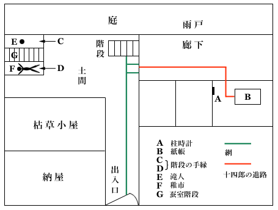

かようなことを、作者として、口にすべきではないであろうが、自分が書いた幾つかのなかでも、やはり好きなものと、嫌いなものとの別が、あるのは否まれぬと思う。わけても、この「白蟻」は、巧拙はともかく、私としては、愛惜
措く能わざる一つなのである。私は、こうした形式の小説を、まず、何よりも先に書きたかったのである。
私小説――それを一人の女の、脳髄の中にもみ込んでしまったことは、ちょっと気取らせてもらうと、かねがね夢みていた、野心の一つだったとも云えるだろう。
のみならず、この一篇で、私は
独逸歌謡曲特有の、あの親しみ深い低音に触れ得たことと思う。それゆえ私が、どんなにか、探偵小説的な
詭計を作り、またどんなにか、怒号したにしても、あの
音色だけは、けっして殺害されることはないと信じている。ただ惜しむらくは、音域が余りに高かったようにも思われるし、終末近くになって、結尾の反響が、呟くがごとく聴えてくる――といったような見事な和声法は、作者自身
動悸を感じながら、ついになし得なかったのである。
私は、この一篇を、着想といい譜本に意識しながら、書き続けたものだが、前半は昨年の十二月十六日に完成し、後半には、それから十日余りも費やさねばならなかった。それゆえ読者諸君は、女主人公滝人の絶望には、真黒な三十二音符を……、また、力と挑戦の吐露には、急流のような、三連音符を想像して頂きたいと思う。
なお、本篇の上梓について、江戸川・甲賀・水谷の三氏から、推薦文を頂いたことと、松野さんが、貧弱な内容を覆うべく、あまりに豪華な装幀をもってせられたことに、感謝しておきたいと思う。
一九三五年四月
世田ヶ谷の寓居にて
著者
秩父町から志賀坂峠を越えて、上州神ヶ原の
宿に出ると、街を貫いて、
埃っぽい
赤土道が流れている。それが、
二子山麓の、
万場を発している十
石街道であって、その道は、しばの間をくねりくねり
蜿々と高原を這いのぼっていく。そして、やがては十石峠を分水嶺に、
上信の国境を越えてゆくのだ。ところが、その峠をくだり切ったところは、右手の
緩斜から前方にかけ、広大な地峡をなしていて、そこは見渡すかぎりの
荒蕪地だったが、その辺をよく注意してみると、峠の裾寄りのところに、わずかそれと見える一条の
小径が
岐れていた。
その小径は、
毛莨や
釣鐘草や
簪草などのひ弱い夏花や、鋭い棘のある
淫羊
、
空木などの
丈低い草木で覆われていて、その入口でさえも、密生している
叢のような暗さだった。したがって、どこをどう透し見ても、土の表面は容易に発見されず、たとい見えても、そこは濃い
黝んだ緑色をしていて、その湿った土が、熱気と地いきれとでもって湧き立ち、ドロリとした、液のような感じを眼に流し入れてくる。けれども、そのように見える土の流れは、ものの三尺と行かぬまに、はや波のような下生えのなかに没し去ってしまう。が、その前方――半里四方にも及ぶなだらかな緩斜は、それはまたとない、草木だけの世界だった。そこからは、
熟れいきれ切った、まったく
堪らない生気が発散していて、その
瘴気のようなものが、草原の上層一帯を覆いつくし、そこを匂いの幕のように鎖していた。しかし、ここになによりまして
奇異なのは、そこ一帯の風物から、なんとも云えぬ異様な色彩が眼を打ってくることだった。それが、あの真夏の飽和――燃えさかるような緑でないことは明らかであるが、さりとてまた、雑色でも
混淆でもなく、一種病的な色彩と云うのほかになかった。かえって、それは、心を冷たく打ち
挫ぎ、まるで枯れ尽した
菅か、荒壁を思わす
朽樹の肌でも見るかのような、妙にうら
淋れた――まったく見ていると、その暗い情感が、ひしと心にのしかかってくるのだった。
云うまでもなく、それには原因があって、この地峡も、過去においてはなんべんか興亡を繰返し、いくつかの
血腥い記録を持っていたからであり、また一つには、そこを
弾左谿と呼ぶ地名の出所でもあった。天文六年八月に、対岸の
小法師岳に
砦を築いていた
淵上武士の頭領
西東蔵人尚海が、かねてより
人質酬いが
因で反目しあっていた、
日貴弾左衛門珍政のために攻め滅ぼされ、そのとき家中の老若婦女子をはじめに、町家の者どもまで加えた千人にもおよぶ人数が、この緩斜に引きだされて
斬首にされてしまった。そして弾左衛門は、その
屍を数段に積みかさね、地下ふかく埋めたのだった。ところが、その後明暦三年になると、この地峡に
地辷りが起って、とうにそのときは土化してしまっている屍の層が
露き出しにされた。そうすると、腐朽しきった屍のなかに根を張りはじめたせいか、そこに生える草木には、異常な生長が現われてきて、やがてはその烈しい生気が、
旧い地峡の死気を
貪りつくしてしまったのである。そうして、いまでも、その巨人化と密生とは
昔日に異らなかった。相変らず、その薄気味悪い肥土を
啜りとっていて、たかく懸け垂れている一本の幹があれば、それには、別の茎がなん本となく
纏わり抱きあい、その
空隙をまた、葉や巻髭が、隙間なく層をなして重なりあっているのだが、そうしているうちには、
吸盤が触れあい茎棘が刺しかわされてしまうので、その
形相すさまじい噛みあいの歯音は、やがて音のない夢幻となって、いつか知らず色のなかに
滲み出てくるのだった。
わけても、
鬼猪殃々のような武装の固い兇暴な植物は、ひ弱い他の草木の
滴までも啜りとってしまうので、自然茎の節々が、しだいに
瘤か
腫物のように張り膨らんできて、妙に寄生的にも見える、薄気味悪い変容をところどころ見せたりして、すくすくと巨人のような生長をしているのだった。したがって、
鬼猪殃々は妙に中毒的な、ドス黒く灰ばんだ、まるで病んだような色をしていた。しかも、長くひょろひょろした
頸を空高くに差し伸べていて、それがまた、上層で
絡みあい
撚りあっているので、自然柵とも
格檣ともつかぬ、
櫓のようなものが出来てしまい、それがこの広大な地域を、砦のように固めているのだった。その小暗い下蔭には、ひ弱い草木どもが、数知れずいぎたなく打ち倒されている。おまけに、
澱みきった新鮮でない熱気に蒸したてられるので、花粉は腐り、葉や幹は朽ち液化していって、当然そこから発酵してくるものには、小動物や昆虫などの、糞汁の臭いも入り混って、一種堪えがたい毒気となって襲ってくるのだった。それは、ちょっと臭素に似た匂いであって、それには人間でさえも、
咽喉を害し睡眠を妨げられるばかりでなく、しだいに視力さえも薄れてくるのだから、自然そうした
瘴気に抵抗力の強い大型な
黄金虫や
やすでや
むかで、あるいは、好んで不健康な湿地ばかりを好む猛悪な爬虫以外のものは、いっさいおしなべてその区域では生存を拒まれているのだった。
まことに、そこ一帯の高原は、原野というものの精気と荒廃の気とが、一つの
鬼形を
凝りなしていて、世にもまさしく
奇異な一つに相違なかった。しかし、その情景をかくも
執拗に記し続ける作者の意図というのは、けっして、いつもながらの
饒舌癖からばかり発しているのではない。作者はこの一篇の主題にたいして、本文に入らぬまえ、一つの
転換変容をかかげておきたいのである。と云うのは、もし人間と物質との同一化がおこなわれるものとして、人間がまず草木に、その欲望と情熱とを托したとしよう。そうすれば、当然草木の
呻吟と揺動とは、その人のものとなって、ついに、人は草木である――という結論に達してしまうのではないだろうか。さらに、その原野の標章と云えば、すぐさま、
糧にしている刑屍体の腐肉が想いだされるけれども、そのために草木の髄のなかでは、なにか細胞を異にしている、異様な個体が成長しているのではないかとも考えられてくる。そして、一度憶えた甘味の舌触りが、おそらくあの烈しい生気と化していて、その
靡くところは、たといどのような生物でも圧し
竦められねばならないとすると、現在緩斜の底に
棲む
騎西一家の悲運と敗惨とは、たしかに、人と植物の立場が転倒しているからであろう。いや、ただ単に、その人達を喚起するばかりではなかった。わけても、その原野の正確な擬人化というのが、
鬼猪殃々の奇態をきわめた生活のなかにあったのである。
あの鬼草は、
逞しい意欲に充ち満ちていて、それはさすがに、草原の王者と云うに
適わしいばかりでなく、その力もまた衰えを知らず、いっかな
飽くことのない、兇暴
一途なものであった。が、ここに不思議なことと云うのは、それに意志の力が高まり欲求が
漲ってくると、かえって、
貌のうえでは、変容が現われてゆくのである。そして不断に
物懶いガサガサした音を発していて、その皮には、幾条かの思案げな
皺が刻まれてゆき、しだいに
呻き悩みながら、あの鬼草は奇形化されてしまうのであった。
明らかに、それは一種の病的変化であろう。また、そのような植物妖異の世界が、この世のどこにあり得ようと思われるだろうが、しかし、騎西
滝人の心理に影像をつくってみれば、その二つがピタリと頂鏡像のように符合してしまうのである。まったく、その照応の神秘には、頭脳が分析する余裕などはとうていなく、ただただ怖れとも
駭きともつかぬ異様な情緒を覚えるばかりであった。けれども、それがこの一篇では、けっして白蟻の歯音を形象化しているのではない。たしかに、一つの特異な色彩とは云えるけれども、しかし土台の底深くに潜んでいて
蜂窩のように
蝕み歩き、やがては思いもつかぬ、自壊作用を起させようとするあの悪虫の力は、おそらく真昼よりも
黄昏――色彩よりも、
色合いの怖ろしさではないだろうか。
しかし、作者はここで筆を換えて、騎西一家とこの地峡に関する概述的な記述を急ぎ、この序篇を終りたいと思うのである。事実、晩春から仲秋にかけては、その原野の奥が孤島に等しかった。その期間中には、一つしかない小径が隙間なく塞がれてしまうので、交通などは真実思いもよらず、ただただ見渡すかぎりを、陰々たる
焔が包んでしまうのだ。しかし、もう一段眺望を高めると、その沈んだ色彩の
周縁が、コロナのような輝きを帯びていて、そこから視野のあらんかぎりを、明るい緑が涯もなく押し拡がってゆく。地峡は、草原の前方あたりで、小法師岳の裾を
馬蹄形に迂廻してゆき、やがては南佐久の高原中に消えてしまうのであるが、その小法師岳は数段の樹相をなしていて、中腹近くには
鬱蒼と生い繁った
樅林があり、また樹立のあいだには小沼があって、キラキラ光る面が
絶れ切れに点綴されているのだ。そして、そこから一段下がったまったくの底には黒い
扁平い、積木をいくつも重ねたようにみえる建物があった。
それは、
一山支配当時の遺物で、郷土館であったが、中央に高い望楼のある母屋を置いて、小さな五つあまりの棟がそれを取りかこみ、さらにその一画を白壁の土塀が
繞っていた。だがもし、その情景を、烈々たる陽盛りのもとに眺めたとすれば、水面から揺らぎあがってくる眩いばかりの
晃耀［＃ルビの「くわうえう」はママ］が、その一団の建物を
陽炎のように包んでしまい、まったくそこには、遠近高低の測度が失われて、土も草も静かな水のように見える。また建物はその上で揺るぎ動いている、美しい船体としか思われなくなってしまうのだった。そうして、現在そこには、騎西一家が棲んでいる――と云うよりも、代々
馬霊教をもって鳴るこの南信の名族にとれば、むしろ悲惨をきわめた流刑地と云うのほかにはなかったのである。
ところで、騎西一家を説明するためには、ぜひにも馬霊教の縁起を記さなければならない。その発端を、文政十一年十月に発していて、当時は騎西家の二十七代――それまで代を重ねての、一族婚が災したのであろうか、その怖ろしい果実が、当主熊次郎に至り始めて結ばれた。それが、今日の神経病学で云う、いわゆる幻覚性偏執症だったが、偶然にもその月、彼の幻覚が現実と符合してしまった。そして、夢中云うところの場所を掘ってみると、はたしてそこには、馬の屍体が埋められてあった。と云うのが、一種の透視的な驚異を帯びてきて、それから村里から村里の間を伝わり、やがて江戸までも
席捲してしまったというのが、そもそもの始まりである。その事は「
馬死霊祓柱之珂玲祝詞」の首文とまでなっていて、『
淵上村神野毛馬埋有上爾
雨之夜々陰火之立昇依而文政十一年十一月十四日騎西熊次郎
依願祭之』という以上の一文によっても明らかであるが、さらにその
祝詞は、馬の死霊に神格までもつけて、五瀬霊神と呼ぶ、異様な顕神に化してしまったのである。
しかし、その布教の本体はと云えば、いつもながら、
淫祠邪教にはつきものの催眠宗教であって、わけても、当局の指弾をうけた点というのが、一つあった。それは、信者の催眠中、
癩に似た感覚を暗示する事で、それがために、白羽の矢を立てられた信者は、身も世もあらぬ恐怖に駆られるが、そこが、教主くらの
悪狡いつけ目だった。彼女は得たりとばかりに、不可解しごくな
因果論を説き出して、なおそれに附け加え、霊神より離れぬ限りは
永劫発病の
懼れなし――と宣言するのである。けれども、もともと根も葉もない病いのこととて、どう間違っても発病の
憂いはないのであるから、当然そういった統計が信者の狂信を煽り立てて、馬霊教の声望はいやが上にも高められていった。ところが、その矢先、当局の弾圧が下ったのである。そして、ついに二年前の昭和×年六月九日に、当時復活した
所払いを、いの一番に適用されたので、やもなく騎西一家は東京を捨て、生地の
弾左谿に帰還しなければならなくなってしまった。
その夜、板橋を始めにして、とりとめがたい物の響が、
中仙道の
宿々を
駭かしながら伝わっていった。その響は雷鳴のようでもあり、行進の足踏みのようにも思えたけれど、この真黒な一団が眼前に現われたとき、不意に狂わしげな旋律をもった
神楽歌が唱い出され、それがもの恐ろしくも鳴り渡っていった。老い皺ばった教主のくらを先頭にして、長男の十四郎、その
側に、妙な
籠のようなものを背負った妻の滝人、次男である白痴の
喜惣、妹娘の時江――と以上の五人を中心に取り囲み、さらにその
周囲を、真黒な密集が
蠢いていたのである。その千にも
余る
跣足の信者どもは、口を真黒に開いていて、互いの
頸に腕をかけ、肩と肩とを組み、熱意に燃えて変貌したような顔をしていたが、その不思議な行進には
佩剣の響も伴っていて、一角が崩されると、その人達はなおいっそう激昂して蒼白くなるが、やがてそうしているうちに、最初は一つだった集団が、幾つにも、水銀の玉のように分れてゆくのだった。しかし、信者の群は、なおも闇の中から、むくむく湧き出してくるのだったけれども、それが
深谷あたりになると、大半が切り崩されてしまい、すでに神ヶ原では、五人の周囲に人影もなかった。
かくして、一種の悲壮美が、怪教馬霊教の
終焉を飾ったのだったが、その五人の一族は、それぞれに特異な宿命を背負っていた。そればかりでなく、とうに四年前――滝人が
稚市を生み落して以来というものは、一族の誰もかもが、己れの血に怖ろしい疑惑を抱くようになってきて、やがては肉も骨も溶け去ってしまうだろうと――まったく聴いてさえも
慄然とするような、ある悪疫の
懼れを抱くようになってしまった。そうして、そのしぶとい相克が、地峡のいいしれぬ荒廃と
寂寥の気に触れたとすれば、当然いつかは、狂気とも衝動ともなりそうな、妙に底からひたぶりに揺り上げるようなものが溜ってきた。事実騎西一家は、最初滝人が背負ってきた、籠の中の生物のために打ち
挫がれ、続いてその残骸を、最後の一滴までも弾左谿が
呑み尽してしまったのである。
さて、騎西家の人達は、そのようにして文明から
截ち切られ、それから二年余りも、今日まで
隠遁を破ろうとはしなかった。が、そうしているうちに、この地峡の中も、しだいにいわゆる別世界と化していって、いつとなく、奇怪な生活が営まれるようになった。ところが、その異常さというのがまた、眼に見えて、こうと指摘できるようなところにはなかったのである。現に、この
谿間に移ってからというものは、騎西家の人達は見違えるほど野性的になってしまって、
体躯のいろいろな角が、ずんぐりと節くれ立ってきて、皮膚の色にも、すでに払い了せぬ土の香りが滲み込んでいた。わけても、男達の
逞しさには、その頸筋を見ただけで、もう侵しがたい山の気に触れた心持がしてくる。それほど、その二人の男には密林の形容が具わってきて、
朴訥な信心深い
杣人のような偉観が、すでに動かしがたいものとなってしまった。
したがって、異常とか病的傾向とかいうような――それらしいものは、そこに何ひとつ見出されないのが当然である。が、そうかと云って、その人達の異様な鈍さを見るにつけても、またそこには、何か不思議な干渉が、行われているのではないかとも考えられてくるのだ。事実、人間の精神生活を朽ちさせたり、官能の世界までも、
蝕み
喰い尽そうとする力の怖ろしさは、けっして悪臭を慕ったり、自分自ら植つけた、病根に酔いしれるといった――あの
伊達姿にはないのである。いやむしろ、そのような反抗や感性などを、根こそぎ奪われてしまっている世界があるとすれば、かえってその力に、真実の闇があるのではないだろうか。それはまさに、人間退化の極みである。あるいは、孤島の中にもあらうし
［＃「あらうし」はママ］、極地に近い辺土にも――そこに棲む人達さえあれば、必ず
捉まえてしまうであろう。けれども、そういった、いつ尽きるか判らない孤独でさえも、人間の身内の中で意欲の力が燃えさかり、生存の前途に、つねになんらかの、希望が残っているうちだけはさほどでないけれども、やがて、そういったものが薄らぎ消えてくると、そろそろ自然の触手が伸べられてきて、しだいに人間と取って代ってしまう。そこで、自然は俳優となり、人間は背景にすぎなくなって、ついに、動かない荘厳そのものが人間になってしまうと、たとえば虹を見ても、その眼醒めるような生々した感情がかえって自然の中から
微笑まれてくるのである。しかし、そのような世界は、事実あり得べくもないと思われるであろうが、また、この広大な地上を考えると、どこかに存在していないとも限らないのである。現に、騎西家の人達は、その
奇異な
掟の
因虜となって、いっかな涯しない、孤独と
懶惰の中で朽ちゆかうと
［＃「朽ちゆかうと」はママ］していたのであった。
そこで、その人達の生活の中で、いかに自然の力が正確に刻まれているかを云えば……。前夜の睡眠中に捲かれておいた
弾条が、毎朝一分も違わぬ時刻に――目醒めると動き出して、何時には、
貫木の下から仏間の入口にかけて二回往復し、それから四分ほど過ぎると、土間の右から数えて五番目の踏板から下に降りて、そこの土の窪みだけを踏み、
揚戸を開きにゆくといった具合に……。日夜かっきりと、同じ時刻に同じ動作が反覆されてゆくのであるから、いつとなく頭の中の
曲柄や
連動機が仕事を止めてしまって、今では、大きな惰性で動いているとしか思えないのである。まったく、その人達の生理の中には、すでに動かしえない毒素の層が出来てしまって、最初のうちこそ、何かの驚きや拍子外れのものや、またそうなっても、自分だけはけっして驚かされまいとする――一種の
韜晦味などを求めていたけれども、しだいにそういった期待が望み薄くなるにつれて、もう今日この頃では、まったく異様なものに変形されてしまった。
しかし、そうなると、時折ふと眼が醒めたように、神経が鋭くなる時期が訪れてくる。そのときになると、あの荒涼とした物の輝き一つない
倦怠の中から、妙に音のような、なんとなく鎖が引摺られてゆくのに似た、響が聞えてきて、しかも、それが今にも、皮質をぐるぐる捲き付けて、動けなくでもしてしまいそうな、なにかしら一つの、怖ろしい
節奏があるように思われるのだった。それが、彼らを
戦かせ、狂気に近い怖れを与えて、ひたすらその攻撃に、捉えられまいと努めるようになった。そこで、日常の談話の中でも、口にする文章の句切りを測ってみたり、同じ歩むにしても、それに花文字や
傾斜体文字でも感じているのではないかと思われるような、一足一足、鶏卵の中を歩むような足取りをしたりなどして、ひたすら無慈悲な単調の中からあがき抜けようとしていた。そうして、それに
縋りついて、無理にも一つの偏執を作らなかったならば、なんら考え事もない、仕事もなく眼も使わない日々の生活には、あの滅入ってくるような、音のない
節奏の世界を、身辺から遠ざける工夫とてほかになかったのである。
けれども、そうしているかたわら、彼らの情緒からも感情からも、しだいと固有の動きが失せてきて、終いには気象の変化や風物の形容などに、規則正しく動かされるようになってしまった。わけても、そういう傾向が、妹娘の時江に著しかった。彼女は、自然を
玩具の世界にして、その幻の中でのみ生きている女だった。それで、空気が暖かすぎても冷たすぎても、濃すぎても薄すぎても、病気になり……、たとえば黄昏時だが、始めのリラ色から紅に移ってゆく際に、夕陽のコロナに煽られている、
周囲の団子雲を見ていると、いつとなく（私は揺する、感じる、私は揺する）の、甘い詩の
橙が思い出されてきて、心に明るい
燦爛が輝くのだ。けれども、やがて暗い黄に移り、雲が魚のような形で、南の方に棚引き出すと、時江はその方角から、ふと
遣瀬ない郷愁を感じて、心が暗く沈んでしまうのだった。また朽樹の
洞の
蛞蝓を見ては、はっと顔を染めるような性欲感を覚えたり、時としては、一面にしばが生えた円い丘に陽の当る具合によっては、その複雑な陰影が、彼女の眼に幻影の市街を現わすことなどもあるが、わけても樹の葉の形には、むしろ病的と云えるほどに、鋭敏な感覚をもっていた。しかし、松風草の葉ようなものは、ちょうど心臓を逆さにして、またその二股になった所が、指みたいな形で左右に分れている。ところが、それを見ると、時江はハッと顔色を変えて、激しい呼吸を始め、その場に立ち
竦んでしまうのであるが、それには、どんなに固く眼を
瞑り、頭の中にもみ込んでしまおうとしても、結局その悪夢のような恐怖だけは、どうにも払いようがなくなってしまうのだった。と云うのは、それが
稚市の形であって、それには歴然とした、奇形癩の
瘢痕がとどめられていたからである。
長男の十四郎と滝人との間に生れた稚市は、ちょうど数え年で五つになるが、その子は生れながらに眼を外けさせるような、醜悪なものを具えていた。しかも、分娩と同時に死に標本だけのものならともかく、現在生きているのだから、一目見ただけで、全身に粟粒のような鳥肌が立ってくる。しかし、顔は極めて美しく、とうてい現在の十四郎が、父であると思われぬほどだが、奇態な事は、大きな
才槌頭が顔のほうにつれて盛上ってゆき、額にかけて、そこが
庇髪のようなお
凸になっていた。おまけに、
金仏光りに
禿上っていて、細長い虫のような皺が、二つ三つ這っているのだが、
後頭部のわずかな部分だけには、
嫋々とした、
生毛みたいなものが残されている。事実まったく、その対照にはたまらぬ薄気味悪さがあって、ちょっと薄汚れた因果絵でも見るかのような、何か
酷たらしい罪業でも、底の底に動いているのではないかという気がするのだった。なお、皮膚の色にも、遠眼だと、瘢痕か結節としか見えない鉛色の斑点が、無数に浮上っているのだけれども、
稚市のもつ最大の妖気は、むしろ四肢の指先にあった。すでに、眼がそこに及んでしまうと、それまでの妖怪めいた夢幻的なものが、いっせいに掻き消えてしまって、まるで内臓の分泌を、その
滓までも絞り抜いてでもしまいそうな、おそらく現実の醜さとして、それが極端であろうと思われるものがそこにあった。稚市の両手は、ちょうど孫の手といった形で、左右ともに、二つ目の関節から上が欠け落ちていて、
拇指などは、むしろ肉瘤といったほうが適わしいくらいである。それから下肢になると、右足は拇指だけを残して、他の四本ともペッタリ
潰れたような形になっていて、そこは、肉色の繃帯をまんべんなく捲きつけたように見えるが、左足はより以上
醜怪だった。と云うのは、これも拇指だけがズバ抜けて大きいのだが、わけても気味悪いことには、先へ行くにつれて、耳のような形に曲りはじめ、しかもその端が、
外輪に
反り返っているのだ。また、他の四本も、中指にはほとんど痕跡さえもなく、残りの三本も萎えしなびていて、そこには
椎実が三つ――いやさらに、それを細長くしたようなものが、固まっているにすぎない。したがって、全体の形が、何かの
冠か、片輪
鰭みたいに思われるのである。そして、四肢のどこにも、その部分だけがいやに銅光りをしていて、妙に汚いながらも触りたくなるような、
襞や段だらに覆われていた。のみならず、この奇怪な変形児は、まったくの
唖であるばかりか、知能の点でも、母の識別がつかないというのだから、おそらくは生物としては、この上もなく下等な存在であろう。事実稚市には、わずかに見、喰うだけの、意識しか与えられていなかったのである。
したがって
稚市が、この世で始めの
呼吸を吐くと、その息吹と同時に、一家の心臓が掴み上げられてしまったのだ。云うまでもなく、その原因は
四肢の変形にあって、しかも形は、疑うべくもない
癩潰瘍だった。現に仏医ショアベーの名著『暖国の疾病』を操ってみれば判るとおりで、それにある奇形癩の標本を、いちいち
稚市と対照してゆけば、やがて幾つか、符合したものが見出されるに相違ない。おまけに、両脚がガニ股のまま強直していて、この変形児は、てっきり置燈籠（）とでも云えば、似つかわしげな形で
這い歩いているのだった。だが、そうなると稚市の誕生には、またちょっと、因果
噺めいた臆測がされてきて、あるいは、根もない恐怖に
虐げられていた、信徒達の酬いではあるまいかとも考えられてくる。が、そうしているうちに、その迷信めいた考えを払うに
足るものが、古い文書の中から発見された。それは、くらの夫――すなわち先代の近四郎が、草津
在の癩村に
祈祷のため赴いたという事実である。するとそれからは、たとえそれが、遺伝性であろうと伝染性であろうと、また胎中発病が、あり得ようがあり得まいが、もうそんな病理論などは、物の数ではなくなってしまって、はや騎西家の人達は、自分達の身体に腐爛の臭いを気にするようになってきた。そして明け暮れ
［＃「明け暮れ」は底本では「明れ暮れ」］、己れの手足ばかりを眺めながら、
惨ましい絶望の中で生き続けていたのである。
ところが、こうした中にも、恐怖にはいささかも染まらないばかりでなく、むしろそれを嘲り返している、不思議な一人があった。それが、十四郎の妻の滝人である。彼女は、一種奇蹟的な力強さでもって、あの悪病の
兆にもめげず、絶えず去勢しようと狙ってくる、自然力とも壮烈に闘っていて、いぜん害われぬ理性の力を保ちつづけていた。それには、何か異常な原因がなくてはならぬであろう。事実滝人には、一つの大きな疑惑があって、それには、彼女が一生を
賭してまでもと思い、
片時も忘れ去ることのない、ひたむきな偏執が注がれていた。そして、絶えずその神秘の中に分けて入ってゆくような
蠢惑を感じていて、その一片でも征服するごとに、いつも勝ち誇ったような、気持になるのが常であった。しかし、その疑惑の渦が、しだいと拡がるにつれて、やがては、悪病も孤独も――寂寥も何もかも、この地峡におけるいっさいのものが、妙に不安定な、一つの空気を作り上げてしまうのだった。
八月十六日――その日は、早朝からこの地峡の上層を、真白な薄雲が一面に覆うているので、空気は少しも
微がうとは
［＃「微がうとは」はママ］せず、それは肢体に浸み渡らんばかりの蒸し暑さだった。それでも正午頃になると、八ヶ岳の裾の方から雲が割れてきて、
弾左谿の上空にはところどころ
碧空が覗かれたが、まもなく、さうして
［＃「さうして」はママ］片方に寄り重なった雲には、しだいに薄気味悪い墨色が加わってきた。そして、その一団の密雲は、ちょうど渓谷の対岸辺りを縁にして、除々と西北の方角に動きはじめたのであったが、そのうち、いやにぬくもりを含んだ風が、峰から吹き下りて来たかと思うと、やがて
轟々たる反響が、広い地峡の中を揺ぶりはじめた。しかしその雲も、小法師岳寄りの側になると、よほど薄らいでいて、時折太い雨脚が一つ二つ見えるという程度だったけれども、葉末の中ははや
黄昏ていて、その暗がりのなかで絶えず黄ばんだ光りが
瞬いていた。その頃、騎西家の頭上にある沼の畔で、不安げに、雲の行脚を眺めている一人の女があった。それは、見ようによっては三十近くにも見えるだろうが、だいたいに塊量といった感じがなく、どこからどこまで妙にギスギス棘立っていて、そのくせなんとなく、熱情的な感じがする女だった。そして、薄汚ない
篠輪絣の
単衣に、縞目も見えなくなった
軽山袴をはいていて、服装だけは、いかにも
地臭そのものであろうが、それに引きかえ顔立ちには、全然それとはそぐわない、透き徹った理智的な、むしろ冷酷ではないかと思われるような峻烈なものがあって、その二つが異様な対照をなしていた。十四郎の妻の
滝人は、こうして一時間もまえから、沼の
水際を放れなかったのである。
けれども、その顔が漠然とした、仮面のように見えるのは、なぜであろうか。もちろんそれには、あの耐えられない憂鬱や、多産のせいもあるとは云え、たかが三十を二つ越えたばかりの肉体が、なぜにそう見る影もなく
害われているのであろうか。顔からも四肢の
艶からも、張りや脂肪の層がすでに薄らぎ消えていて、はや
果敢ない、朽ち葉のような匂いが立ちのぼっているのだった。しかし、眼には
眦が鋭く切れて、それには絶えず、同じことのみ眺め考えているからであろうか、瞳のなかが泉のように澄み切っていた。事実、彼女の心のなかには、あのふしだらな単調な生活にも破壊されず、けっして
倦むこともなく、絶えず一つの思念を、凝視してゆく活力があった。それが、滝人の蒼ざめた顔のなかで、不断の欲望を燃えさからせ、絶えず
閃いては、あの不思議な神経を動かしていった。そのためかしら、滝人の顔には、しだいと図抜けて、眼だけが大きくなっていった。そして肉体の衰えにつれて、鼻端がいよいよ尖り出し唇が薄らいでくると、その毛虫のような
逞しい眉と
俟って、たださえ険相な顔が、よりいっそう物凄く見えるのだった。そのように、滝人には一つの狂的な
憑着があって、その一事は、すでに五年越しの疑惑になっていた。けれども、そのために、時折危険な感動を覚えるということが、かえって今となっては、滝人の生を肯定している唯一のものになってしまった。事実、彼女はそれによって、ただ一人かけ離れた不思議な生き方をしているのだった。そして、疑惑のどこかに、わずかな陰影でもあれば、絶えずそれを捉えようとあがいていたのであるが、そのうちいつとなく、気持の上に均衡が失われてきて、今では、もう動かしがたい、心理的な病的な性質が具わってしまった。さて、滝人の心中に渦巻き狂っているというその疑惑は、そもそも何事であろうか――それを述べるに先立って、一言、彼女と夫十四郎との関係を記しておきたいと思う。
その二人は、同じながら晩婚であって、滝人は二十六まで処女で過し、また十四郎は、土木工学の秀才として三十を五つも過ぎるまで
洗馬隧道の
掘鑿に追われていた。そして、滝人の実家が馬霊教の信者であることが、そもそもの最初だった。それから、
繁い
往来が始まって、そうしているうちにいつしか二人は、互いに相手の理智と聰明さに
惹かれてしまったのである。しかし、初めのうちは隧道ぎわの官舎に住み、そのうちこそ、二人だけの世界を持っていたのだったが、ちょうど結婚後一年ばかり過ぎた頃に、思いがけない落盤の惨事が、二人を深淵に突き落してしまった。ところが十四郎は、運よく救い出された三人のうちの一人だったけれども、それを転機にして、運命の神は死にまさる苦悩で、彼女を
弄びはじめた。と云うのは、落盤に鎖された真暗な隧道の中で、十四郎は恐怖のために変貌を来たしてしまい、あまつさえ、その六日にわたる暗黒生活によって、その後の彼には、性格の上にも不思議な転換が現われてきた。そうして滝人は、これが十四郎であると差し示されたにもかかわらず、どうして顔も性格も、以前とは似てもつかぬ、醜い男を夫と信じられたであろうか。
なるほど、持ち物はまさしくそうだし、かつまた身長から骨格までほとんど等しいのであったが、十四郎はまったく過去の記憶を
喪っていて、あの明敏な青年技師は、一介の農夫にも劣る
愚昧な存在になってしまった。その上、それまでは邪教と
罵っていた、母の馬霊教に専心するようになったのだが、彼の変換した人格は、おもにその影響を滝人のほうにもたらせていた。と云うのは、だいいち十四郎の気性が、粗暴になってきて、
血腥い狩猟などに
耽り、
燔祭の生き餌までも、手ずから
屠ると云ったように、いちじるしい
嗜血癖が現われてきた事だった。またもう一つは、ひどく淫事を
嗜むようになったという事で、彼女は夜を重ねるごとに、自分の
矜恃が
凋んでゆくのを、眺めるよりほかになかった。あの動物的な、
掠奪くるような要求には――それに慣れるまで、彼女は幾度か死を決したことだったろう。そして、その翌年、惨事常事
妊もっていた
稚市を生み落した以後は、毎年ごとに流産や死産が続いていて、彼女の肉体はやがて衰えの果てを知ることができないようになってしまった。しかし、滝人にとると、そうして魔法のような風に乗り、訪れてきた男が、第一自分の夫であるかどうかというよりも、まずそれを決める、尺準がないのに困惑してしまった。
変貌、人格の変換――そうした事は、仮説上まさしくあり得るだろうが、一方には、それをまた根底から否定してしまうような事実を、直後に知ってしまったのだった。そうして疑惑と苦悩の渦は、いぜん五年後の今日になっても、波紋を変えなかった。滝人もまた、それに狂的な偏執を持つようになって、おそらくこれが、永遠に解けぬ謎であろうとも、どうして脳裡から、離れ去る
機があろうとは思われなかった。それから滝人の生活は、夢うつつなどというよりも、おそらく悪夢という地獄味の中で――ことに味の最も
熾烈なものだったに相違ない。たぶん彼女には、現実も幻も、その差別がつかなかったであろう。そして五年にもわたって、夫とも他人ともつかぬ、異様な男と同棲を続けてきたことは、事実苦悩とも何ともつかない――それ世上、人間の世界には限度があるまいと思われるほど、痛ましい経験だったことであろう。しかし、より以上怖ろしさを覚えるのは、滝人のあくことのない執着だった。それが一方において、強烈な精神力を築き上げてしまい、彼女には自分の外界がどう変ってゆこうが、そんな事にはてんで頓着がなく、ひたすらその、執念一途にのみ生き続けていたのである。それゆえ、五年前の救護所における彼女と、今しも沼の面を、無心に眺めつづけている滝人との差を求めたとすれば、わずかに肉体の衰えをそうと云えるのみであろう。その間は、日ごと同じような循環論が繰り返されていって、あの痛々しげな
喘ぎが、いかにかすれゆくとも、彼女の生が終るまでは、どうして断たれることがあろうと思われた。その時、雷の嫌いな滝人は、しばらく顔を上げて空を眺めていたが、ようやく雲の行脚に
安堵したものか、やおら立ち上がって、畔近い槲の木立ちの中に入って行った。そこには、樹疫のためか、皮が剥がれて、瘤々した赤い肌が露われている老樹が立ち並んでいた。滝人は、それを一つ一つ数えながら、奥深く入って行ったが、やがて人間のように、
四肢をはだけた古木の前に立つと、彼女は眼の光りを消し、それを微笑に変らせていった。そして、唇からは、夢幻的な
恍とりとしたような
韻が繰り出された。
「こんなふうに
貴方の前に立っただけで、もう私は、なんとも云えぬ不思議な気持になってしまいます。貴方は、私が雷が嫌いなのをご承知でいらっしゃいましょう。いいえ、ご存知でなくても、私はそうに決めてしまいますわ。そして、いつもそんな時には、額から瞼の上にかけて、重い幕のようなものに包まれてしまって、膝は鉛のように
気懶くなり、ホラこんな具合に、眼の中から
脈搏の音が聴えてくるのです。そうしますと、眼に映っている事物の線がなんだかビクビク引っつれだしてきたような気持がしてきて、貴方のお顔にどうやら似ていると思われるこの瘤の模様が、時には
微笑だしたように思ったりなどして、私も、ともどもそれにつれて笑い出そうといたしますのですが、またそのような時は、急に恥かしくなってきて、こんなふうに真っ赤になってしまうのでございますよ。ああ貴方は、けっして遠い処に、お暮しになっているのではございません。私が永い間流し続けてきた涙は、いつか知らず、このような奇体な修練を覚えさせてくれたのです。貴方の本当のお顔を、この幹の中ではじめて見た時には、今度はまるで性質のちがった涙が、私の心をうまく掻き
雑ぜてくれました。私はどうしても、そうせずにはいられなかったのです。この三重の奇態な生活が、結局無駄とは知りながらも、そう知れば知るほど、その夢幻が何にも換えられなくなってまいります。ねえ貴方、あの男は、いったい本当の貴方なのでしょうか。それとも、私がそれではないかと疑ぐっている、
鵜飼邦太郎なのでしょうか。もし、その
差別をクッキリとつけることが出来れば、もう木の
瘤の貴方のところへは、私、二度とはまいりますまいが……」
その
槲の木は、片側の根際まで剥ぎ取られていて、露出した肌が、なんとなく不気味な生々しい赤色で、それが腐り
爛れた四肢の肉のように見えた。そして、その中央辺に、奇妙な瘤が五つ六つあって、その一帯が、てっきり人の顔でも連想させるような、異様な起伏を現わしていた。けれども、その樹の前に立ち塞がって、人瘤に優しく呼びかけている女というのが、もしも花の冠でもつけた、オフィリヤでもあるのなら、この情景はさしずめ銅版画の夢でもあろう。しかし、滝人の眼は、吐いてゆく言葉の優しさとは異り、異様な鋭さをみせていて、その中には一つの貫かずには
措かない、はげしい意欲の力が燃えていた。彼女は、額の
後毛を無造作にはね上げて、幹に突っ張った、片手の肩口から覗き込むようにして、なおも話しかけるのを止めようとはしなかった。
「あの時、同じ救い出された三人のうちで、たしか
弓削とかいう、工手の方がおりましたわね。その方が、私にこういう事実を教えてくれました。なんでも、最後の七日目の日だったとかいうそうですが、その時まで生き残っていたのが、貴方はじめ技手の鵜飼、それから二人の工手だったそうでございましたわね。そして、最初の落盤が、水脈を塞いでしまったために水がなく、もうその時は水筒の水も尽きていて、あの暗黒の中では、何より烈しい渇きが、貴方がたを苦しめていたのでした。それに、あの辺は温泉地帯なので、その地熱の猛烈なことと云ったら、一方凍死を助けてくれたとは云い条、そのために、一刻も水がなくては過せなかったのではございませんでしたか。それで、貴方はもう矢も
盾もたまらなくなって、
洞の壁に
滴水のある所を捜しに出かけたのでしたわね。そして、とうとうその場所を見付けたのでしたが、その滴水というのが、間歇泉の枝脈なのですから、一時は吹き出しても、それは間もなくやんでしまって、再び地熱のためからからに干上がってしまうのです。ところが、その水の出口に唇を当てているうちに、あの湿った柔かい土の中に、貴方のお顔は、ずるずると入り込んでいったのです。ああ私は、自分ながらこの
奇異な感情を、なんといい表わしたらよいものでしょうか……。だって、人もあろうに貴方に向かって、現在ご自分がお出逢いなった経験を、お聴かせしなければならないのですものね。いいえ、貴方はもう、この世にはお出でにならないのかもしれませんわ。きっとそれでなければ、楽しい想い出まで、何もかもお忘れになった、あの阿呆のような方になってしまって……」
そこで滝人は再び口を
噤んで、視線を力なく下に落した。その時、雷雲の中心が、対岸の
斑鳩山の真上に迫っていて、この小暗い樹立の中には、
黄斑を
打ちまけたような光が明滅を始めた。すると、黄金虫や団子蜂などが一団と化して、兇暴な唸り声を立て、この樹林の中に侵入してきた。そして、その――重く引き摺るような音響に彼女は、以前遠くから聴いた落盤の響を連想した。
「ねえ、そうではございませんか。私は、あの怖ろしい疑惑を解くために、どれほど
酷い鞭を、神経にくれたことだったか。まったく、私の精神力が、今にも尽きそうでいて、そのくせまだ衰えないのですけれど、それがどうしてどうして、私には不思議に思われてなりませんわ。けれども、それをし了せるためには、たとえどのような影一つでも、一応は捉えて、吟味しなければならないのです。貴方が、救い出されて救護所に運び込まれた時には、一体どんな顔で
隧道を出たとお思いになりまして。その時、医者はこう申しましたわ。貴方は二度目の落盤の時、その恐怖のために笑い筋が引っつれてしまったので、あの大きな筋の異常で鼻は曲り、眼窪が、押し上げられた肉に埋もれてしまったそうなのです。いいえ、まったくその顔といったら、まず能にある
悪尉ならば、その輪廓がまだまだ人並ですが、さあなんと云おうか、さしずめ古い伎楽面の中でも探したなら、あのこの上ない醜さに、滑稽をかねたものがあると思いますわ。しかし、そうして貴方の変貌に思わず我を失ってしまったのですが、ふとかたわらを見ますと、技手の鵜飼さんの屍体の上にも、それはそれは、奇蹟に等しいものが現われていたのです。いいえ、それが鵜飼の屍体だと云われるまでは、どうしても私の眼がそれを信じ――いえいえ、この方こそと思いながら、その顔の上に、ぴったり凍りついたまま、離れることが出来なくなっておりました。まあなんと、その顔が同じ変貌によるとは云え……。ああ、一つの場所で二つの変貌――だなどと、そのような奇態が符号が、この人の世にあり得るのでございましょうか。それはともかくして、その鵜飼の顔というのが、じつに貴方そっくりだったでございませんか。そうして、その二つを見比べているうちに、私の頭の中には、それまであった水がすっかり使い尽されてしまって、ただあの怖ろしい疑惑だけが、空虚な皮質にがんがんと響いてくるのでした。まったく、今でさえそうですけど、現在の十四郎というのが、そのじつ鵜飼邦太郎であって……。あの、
四肢が半分ほどの所からなく、岩片で腹を裂かれて、腸が露出している無残な死体のほうが、真実の貴方だったのではなかったか。そうなれば、誰しもそう信ずるのが、自然ではございませんかしら。それに、その事実を
貼り合わせたように裏書する言葉が、貴方のお口からも吐かれたのです。そのとき貴方は、鵜飼の隣りで横向きに臥しておいでになり、眼の前にいるのが私とも知らずに、絶えず
眼覆しを
除してくれと、子供のようにせがまれておりました。私も、大分刻限が経っていたことですから、たいした障りにもなるまいと思って、その結び目をやんわりと弛めてあげました。そして、幾分上のほうにずらせたとき、いきなり貴方は、両手を
眩しそうに眼に当てておしまいになったのです。けれども、その時なんという言葉が、口を
衝いて出たことでしょう。いいえ、けっしてそれは、眼の前にある、鵜飼の無残な
腸綿ではないのです。貴方は、高代という女の名をおっしゃいました。高代――ああ私は、何度でも貴方がお
飽きになるまで繰り返しますわ」といきなり滝人は、引っ
痙れたような笑みを
泛べ、眼の中に、暗い疲れたような色を漂わした。すると、全身にビリビリした神経的なものが現われてきて、それから、
瘤の表面をいとしげに
擦りはじめた。
「ですから、当然私には、その夜から、貴方が病院をお出になる日が、またとなく怖ろしく思われてきたのです。なぜなら、どうしてそれまでに、真実貴方であるか、鵜飼邦太郎であるか分らない男に、抱かれる夜のことなど、想い
泛べたことがあったでしょうか。いいえ、そればかりか、その後まもなく私は、高代という言葉を突き究めることができました。それが
駭いたことには、鵜飼の二度目の妻で、前身は、四つ島の仲居だった女の名なのです。そこでようやく、この疑題の終点に辿りついたような、気がしたのでしたけれども、またそこには、着衣とか所持品とかいう要点もあって、たとえば、その二人の身長が、どんなにか符合しようと、また他にも、一致するような特徴が、あろうがどうだろうが、結局結論となると、変貌という――都合のいい解答一つで片づけられてしまうのでした。ああ、あの確証を得たいばかりに、毎夜私は、どんなにか空々しく、あの男の身長を
摸索っていたことでしょう」
滝人は上気したような顔になって、知らず知らず吐く息の数が殖えていった。彼女は唇を絶えず
濡し、眼を異様に
瞬たいて、その高まりゆく情熱から逃れようとしたが、無駄だった。やがて、柔かい苔の上に身体を横たえたが、過ぎ去った日の美しい回想やら、現実の苦悶やらが雑多と入り乱れて、滝人はさまざまな形に身悶えを始めた。
「あの
閨の
背比べ――恥ずかしがりやの私には、これまで貴方のお身体を、しみじみ記憶に残す機会がございませんでした。お互いに、いらぬ潔癖さがつき
纏っていて、私達はまったく不鍛練でございましたわね。（以下四七一字削除）しかし、その中でただ一つ、はっきりと頭の中に残っておりますのは、あの背比べなのでございます。つまり、
薦骨の突起と突起を合わせてみると、双方の肩先や
踝にどのくらいの隔たりが出来るか……。（以下一八六字削除）それが、以前の貴方の場合とぴったり合ってしまうので、なおさら
昏迷の度が深められてまいるわけなのです。なにしろ、片方は死に、一方は過去の記憶を失っているという始末ですから、どうせどっちつかずの循環論になってしまって、結局はその二人の幻像が、ああでもないこうでもないと、物狂わしげな叫び声を上げながら、私の頭の中を駈け廻るにすぎませんでした。ああほんとうに、あの仮面を見ていると、頭の中が
徐々と乱れてきて、不思議な幻影があちこち飛び廻るようになってしまいます。ですけど、どのみちこの運命悲劇を、自分の力でどうすることも出来ないとすれば、結局相手を殺すか、私が死ぬかの二つの道しかないわけでございます。でも、それには、ぜひにも理由を決定しなければなりません。ところが、それが出来ないのでございます。あの
決定がつかないまでは、どうして、影のようなものに、
刃が立てられましょうか。そうしますと、一方ではあの執着が、私の手を遮ってしまうので、結局宿命の、行くがままに任せて――。死児を生み、半児の
血塊を絶えず泣かしつづけて――。ああほんとうに、あの
鬼猪殃々の原から、
生温い風が裾に入りますと、それが憶い出されて、
慄然とするような
顫えを覚えるのでございます。ねえ貴方、それを
露西亜的宿命論というそうではございませんか。帝政露西亜の兵士達は、疲れ切ってしまうと、最後には雪の中に身を横たえてしまって、もう何事もうけつけず、反応もなければ反抗もせず……」
そこまで、云いつづけているうちに、頭上にある
栴檀の梢から、白い
花弁が、
その雪のように舞い落ち、滝人の身体はよほど埋まっていた。すると、それに気づいたのが、恐ろしい刺激ででもあったかのごとく、彼女はいきなり
弾かれたように立ち上がった。
「だいたい、隠されたものというのは、それが表に現われる日が来るまで、どうあっても、隠されていなければならないといいます。けれども、もうそんな日が来るのを、こっちから便々と待ってはいられなくなりました。そうして
終に、私も決心の
臍を固めて、どのみちどっちに傾いたところで、陰惨この上ない闇黒世界であるに相違ないのですから、私の一身を処置するためには、どうしてもあの二つの変貌と、高代という名の本体を、突き
究めねばならぬと思いました。それから、辛い夜の数を一つ一つ加えながら、いつ尽きるか涯しないことを知りながらも、あの永い苦悩と懐疑の旅に上っていったのでした」
雷鳴のたびごとに、対岸の峰に注ぐ、夕立の音が高まり、強い突風が樹林のここかしこに起って、大樹を傾け梢を
薙ぎ倒しているが、そのややしばし後になると、小法師岳の木々が、異様に反響して余波に応えていた。そして、その間は、天地がひっそりと静まり返って、再びあの耐えがたい湿度が訪れてくる。そのいいようのない蒸し暑さの中で、滝人は、とうてい人間の記録とは思われないような、一連のものを語りはじめた。
「それには、女学校を出たのみの私の知識だけでは、とうてい突破し切れまいと思われたほど、さまざまな困難がございました。しかし、とうとうそれにもめげず、おそらく異常心理については、ありとあらゆる著述を猟り尽しました。その結果、二つの仮説を纏め上げることができたのです。その一つは、いうまでもないことですが、……ひとまず、貴方の変貌についてはさて置くとして、鵜飼邦太郎の変貌には、なにか他から加えられた力があるのではないかと思われたのです。それで、私は、ちょうどぴったりとくる一つの例を、エーベルハルトの大戦に関する類例集の中から、拾い上げることができました。それは、皮紐の合わない小型の
瓦斯マスクを、大男がつけたとして、その男が突撃の際にでも
仆されたとします。すると、瞬間顔の筋肉が、その窮屈な形なりに硬直してしまうというのです。以前にも
小城魚太郎は、探偵小説『
後光殺人事件』の中で、精神の激動中に死を発した場合、瞬間強直を起すという理論を扱いました。けれども私は、それとは全然異った経路で、あるいはそれが真因ではないかと考えるようになりました。と云うのはほかでもございません。貴方が洞壁の滴り水を
啜ったことは、前にも申しました。ところが、その際に出来た
面形が、あるいはその後、温泉の噴出が止むと同時に干上がってしまったのではないかと思われたのです。そして、工手の弓削の話によりますと、それからしばらく後になって、今度はその場所を貴方から聴き、鵜飼邦太郎が手さぐりながら出掛けて行ったそうではありませんか。なんでも、そのとき弓削は、鵜飼が「あったにはあったが、水の口が判らない」と云いますと、それに貴方は「もっと奥へ口をつけて」と教えたのを聴いたというそうですが、その瞬間、第二の落盤が起ったのです。そして、貴方はその場で気を失い、鵜飼邦太郎は、先に作られた面形に顔を埋めたまま、その場を去らず、強直したのではないかと思われました。つまり貴方の変貌には、純粋の心理的な原因があるにしても、鵜飼の場合をそうだとすることは、とうてい神業とするより外にないでしょう。たしかにあの男は、貴方の面形の中に、ぴったりと顔を埋めているうち、突然の
駭きが、そのままの形で硬ばらせてしまったに相違ありません。だいいちあの、いかにも
捏っちあげたような不自然な形が、一方変貌という理論を、力づけていたのではないでしょうか」
それには、凄烈を極めた頭脳の火花が散るように思われたが、そこに達するまでの
艱苦には、さぞかし涙ぐましいものがあったであろう。滝人も、追想やら勝ち誇った気持やら苦悩の想い出などで、ひどく複雑な表情を
泛べて黙っていたが、やがて口を次いだ。
「しかし、その次になって、貴方の口から吐かれた高代という言葉になると、とうていこのほうは、実相に近い仮説を組みあげることはできませんでした。私が執心に執心をかさねて、やっとのことで掴みあげたというこの一つでさえも、一端は言葉となって進行してはゆきますが、すぐに前後を乱してバラバラになってしまうのです。それで、私がわずかに拾い上げたというのも、たったこの一つだけなのでございます。というのはたしか、サイディスの『
複重性人格』には、一番明確なものが挙げられていたように思われますけど、大体が、盲目から解放された瞬間の情景なのです。ここにもし、先天的な白内障患者や、あるいは永いこと、真暗な密室の中にでも鎖じ込められていた人達があったとして、それがやっとのことで、暗黒から解放されるようになったと仮定しましょう。すると、そうして最初の光明に接した際に、いったいどんなものが眼に飛びついてくるとお思いですか。それは、線でも角でもなくて、ただ輪廓が
茫っとしている、色と光りだけの
塊りに
［＃「塊りに」はママ］過ぎないのです。よく私どもの幼い頃には、眩影景（
暗い中を歩かせられて、不意に明るみに出ると、前述したような理論で、何でもないものが恐ろしいものに見える、一種の心理見世物）などいう心理見世物が、きまって、お
化博覧会などの催し物には含まれていたものです。つまり、それによく似た現象が、あのとき眼に映った、鵜飼の屍体の中に、あったのではございませんでしたろうか。それでなくても、俗に
腸綿踊りなどと申すものがございます。それは、今も申した心理見世物の一種なのですが、遠見では人の顔か花のように見えるものが、近寄って見ると、侍が切腹していたり、凄惨な殺し場であったりして、つまり、
腸綿の形を適当に作って、それに色彩を加えるという、いわゆる
錯覚物の一種なのです。そうしてみると、
腸綿がとぐろまいている情態ほど、種々雑多な連想を引き出してくるものは外になかろうと思われます。すると、あの時の鵜飼はどうだったでしょうか。
腹腔が岩片に潰されてしまって、その無残な裂け口から、幾重にも輪をなした
腸綿が、ドロリと気味悪い薄紫色をして覗いておりましたわね。ああそうそう、あのブヨブヨした
堤灯形の段だらだけは、貴方にはご存知がないはずです。ですけど、私の眼にさえも、それは異様なものに映じておりました。多分それというのも、胆汁や腹腔内の出血などが、泥さえも交え、ドロドロにかきまざっていたせいもあるでしょうが、ちょうどその色雑多な液の中で、腸綿のとぐろがブワブワ浮んでいるように見えたのです。ですから、輪廓が判らずに、ただ色と光りしか眼に映らなかったとすれば、あるいは――私はこう考えるのです。そのどこか一部分に、ひょっとしたら、高代という字の形をしたものが現われていたのではなかったか――と。それなり高代という言葉を、あの十四郎は一度も口にしたことはございません。それになお考えてみますと、まだまだ仮説とするには、至って不分明なのでございます。まして、反対の観点からみて、潜在意識といってしまえば、それまででもあって、まったく結論とするには、心細い輪廓しか映っておりませんので、せっかくそこまで漕ぎ付けたにもかかわらず、再び眼醒めかかった意識が、すうっと遠
退いて行くような気がしてしまいました。そして、それから五年の間というものは、絶えずその二つの否定と肯定とが
絡み合っていて、現在私が十四郎と呼んでいる男というのが、いったいそのどっちなのであろうか――聴いてさえも物狂わしくなるような疑惑が、時には薄らぎ消え、ある時はまた、真実に近い姿に見えたりなどして、結局見透しのつかない雲層の中に
埋もれてしまうのが常でした。ああ私が、どうして今日の日まで狂わずにいられたのか、不思議でならないくらいですわ。いいえ、それがあったからこそ、明け暮れ同じ顔を突き合わせているだけでも――、終いにはその顔の細かい特徴までも読み尽してしまって、その上話すにも話しよう種がないといった――それがまさしく騎西家の現状なのでございますが、そのような寂寥のどん底の中でも、私だけはこんなにも力強く、一つの
曙光を待ち焦がれて生きてゆけるのですから。でも、その曙光というのが、もしかして訪れてきた時には、私はいったいどうしたらいいのでしょうか。つまり、それまでは眼も開けられなかった――あの霧が、晴れたときのことですわ……」
滝人の眼の中では、血管がみるみるまに膨れていって、それまで覆うていた、もの淋しげな懐疑的なものが消えた。そして、全身が不思議なことに、まったく見違えてしまったほどに豊かな、いかにも生理的にも充実しているかのような、烈しい意欲の
焔に包まれてしまったのである。しかし、そのとき何と思ったか、滝人はサッと嫌悪の色を
泛べて、樹の肌から飛び退いた。
「ねえ、貴方はいまの
厭わしい臭いはご存知ないでしょう。けっして、あの頃の貴方には、いまみたいな
蒸れきった樹皮の匂いはいたしませんでした。ですから、あの男がもし、真実貴方の
空骸に決まってしまうのでしたら、それこそ、私の採る道はたった一つしかないわけでございましょう。ええ、あの男が鵜飼であってくれるほうが、それはまだしもの事なのです。ですけど、そうなるとまた、一刻も貴方なしでは生きてゆけない私にとると、この世界がまるで悪疫後の荒野といったようなものに化してしまうでしょう。まったく、貴方であってもならず、なくてもいかず、そのどっちになっても、私の絶望には変りがないのです。当然貴方の幻は、その場限りで去ってしまうのですから、かえっていまのように、
執念い好奇心だけに
倚り
縋っていて、
朦朧とした夢の中で楽しんでいる――ともかく、そのほうが幸福なのかも判りませんわ。けれども、そうして日夜あの疑惑の事ばかりを考え詰め、その解答が生れる日の怖ろしさをまた思うと、はては頭の中で進行している、言葉の行間がバラバラになってしまって、自分もともども、その中の名詞や動詞などを一緒に、どこかへ飛び去ってしまうのではないかと思われてきました。事実、私という存在が、脳髄そのものだけのような気がして、あるいはこのまま狂人の世界に惹き入れられてゆくのではないかと思われて、不安はいっそう募ってくるばかりでした。ところが、その瀬戸際で危うく引き止めてくれたのは、ある一つの観念が、ふと私の頭の中で
閃いたからです。つまり、それをさせぬためには、まずどっちにでも、
均衡うだけの
重錘を置くことだ。その茫漠とした
靄のような物質を、単なる曖昧だけのものとはせず、進んで具象化して、一つの機構に組上げなければならぬ――と教えてくれました」
それはさながら、魂と身体とに、不思議な
繋がりがあるのではないかと思われたほど――言葉がそこまでくると、滝人の全身に、異様な感情の表出が現われた。そして、
虻や黄金虫や――それまで彼女にたかっていた
種々な虫どもが、いきなり
顫いたようないっせいに、羽音を立てて、飛び去ってしまった。
「ところで、まず先立ってお話ししなければならないのは……、そうして現在の十四郎と、あの時の鵜飼の顔をかわるがわる思い
泛べていると、いつかその二つが、重なり合ってしまうような、心理作用が私に現われたことです。それを、
二重鏡玉像とかいうようで、よく折に触れて経験することですが、眼に涙が一杯に溜ると、そのために、美しいものでも歪んで見え、またこよなく醜いものが、端正な線や塊に化してしまうことがあるのです。現に、
伊太利の十八世紀小説の中にですが、
凸凹の
鏡玉を透して癩患者を眺めたとき、それが
窈窕たる美人に化したという話もあるとおりで……。また、
忌隈という芝居の古譚などもございまして、一つの
面明りで、ちがった
隈取をした二つの顔を照らす場合には、よほど隈の形や、色を吟味しておかないと、えてして複視を起しやすい遠目の観客には、それが重なりあったとき、悪くすると、声でも立てられるような、不気味なものに見えるそうなのです。事実私には、その現象が心理的に現われてきて、あの二つの顔を思い泛べていると、いつのまにか、その二つが重なり合ってしまうのです。そうすると、おそらく偶然に、その陰陽が符合しているせいでしょうか、それが
のっぺらとした、まるで中古の
女形のような、
優顔になってしまうのですよ。ああ、それで、やっと私は救われました。実際は見もしなかった。変貌以前の鵜飼の顔を、それと定めることが出来たからです。そこで、私の心の中には、あのてんであり得ようとは思われない、不思議な三重の心理が築かれてゆきました。そして、そのためには、たとえどのように、力強い反証が挙がろうとも、現在の十四郎は絶対に鵜飼邦太郎その人であり、さらに、そうなるとまた、貴方に対する愛着が、当然的を失ってしまったようでございますが、それを私は、どんなに
酷い迫り方をしようとも、妹の時江さんから求めねばならなくなりました。この不可解しごくな転換は、まったく考えても、考えきれぬほど異様な
撞着でございましょう。現実私でさえも、その二つとも、自然の本性に反した不倫な欲求であることは、ようく存じております。ええそうですとも、私という一つの人格が、見事二つに裂け分れたのですわ。それも、まったくヒドラみたいに、たとえ幾つに分れようとも、離れるとすぐその二つのものは、異った個体になってしまうのでございます。私が十四郎に対するときには、あの不思議な心理の中でしか知らない鵜飼邦太郎を、じっと
瞼の中に
泛べて、それはまるで、春婦のような気持になってしまうのです。そして、貴方からいつまでも離れまいとする心は、いつでも時江さんに飛びついていて、貴方そっくりのあの顔に、しっくりと絡みついて離れないのです。ああお
憤りになってはいけませんわ。現在の十四郎との肉欲世界も、時江さんのような骨肉に対する愛着も、みんな貴方が、私からお離れになったからいけないのですわ。でも、そうして貴方というものを、新たに求めて、その二つを対立させなかった日には、どうして、心の均衡が保ってゆけるでしょうか。また、その対立が破壊されたとしたら、いまの私では、おそらく
狂人になるか、それとも、破れたほうの一人を殺しかねないものでもありません。どうか貴方、それを悲しくおとりにはならないで――。私は自分の状態に対して、本能的に、一つの正しい手段を選んだにすぎないのでございますから。ですけど、また考えようによっては、それが当然の経路なのです。最初救護所で、鵜飼邦太郎の顔を
一目見た――その時から、貴方はその中へ溶け込んでおしまいになったのですからね。ああ、そうそう、きっと貴方は、
稚市を見れば、お
駭きになるに違いありませんわ。あの子は、貴方が最初の人生をお終えになった、その後に生れたのですが、やはりあの子にも、貴方と同じ白蟻の噛み
痕があるのです」
その頃は、雷雲が幾分遠ざかったので、空気中の蒸気がしだいに薄らぎはじめた。そして、その中へ一面に
滲み出したのは、今にも顔を出しそうな陽の影だった。すると、沼の水面で大きな魚が跳ねたとみえ、ポチャリと音がすると、そのとき池畔の
叢の中から、それは異様なものが現われて出て来た。そこは、
鋸の葉のような、鋭い青葉で覆われていたが、いきなりそこ一帯が、ざわざわ波立ってきたかと思うと、それまで白い
蘚苔の花か、鹿の斑点のように見えていたものが、すうっと動き出した。そして、その間から、人間とも動物ともつかぬ、まったく不思議な形をしたものが、声も立てず、ぬうっと首を突き出した。
それが、
騎西一家に凍らんばかりの恐怖を与え、絶望の底に引き入れた、
稚市だった。その時、もし全身を現わしたなら、それは悪虫さながらの姿だったであろう。不吉な蒸気の輪が、不具の身体と一緒に動いていって、その
手が触れるところは、すぐその場で、毒のある何物かに変ってしまうだろうと思われた。しかし、あの醜い手足も青葉の蔭に隠れ、不気味な妖怪めいた頭蓋の模様も、その
下映に
彩られていて、変形の
要所は、それと見定めることは出来なかった。そして、腹に巻いてある金太郎のような、腹掛の黒さだけがちらついて、妙にその場の雰囲気を童話のようなものにしていた。けれども、稚市自身はどうしたことか、両腕をグングン舵機のように廻しながら、おりおり滝人のほうを眺め、ほとんど無我夢中に、前方の
樹下闇の中に這い込もうとしている。だが、彼を追うているのは、ただ一条の陽の光りだけで、それが
槲の隙葉から洩れているにすぎない。それを滝人は
瞬きもせずに
瞶めていた。その眼は強く広く

かれていたが、眼前にかくも怖ろしいものがあるにもかかわらず、いつものように病的な、膜までかかったような暗さは見られなかった。それが、この物語の中で、最も驚くべき奇異な点だったのである。
実際、その観念は恐ろしいものだった。悪病の
瘢痕をとどめた奇形児を生む――およそ地上に、かくも苦しいものが、またとあるであろうか。けれども滝人は、そのために、まったく無自覚になっているのではなかった。どんなに、威厳のある、大胆な考えでさえも、とうてい及ばないほど、彼女の実際の知識が、この変形児を、まったく異ったものに眺めていた。こうして見ていても、彼女の胸は少しも
轟いてはいず、眼前にある自分の分身でさえも、まるで害のない家畜のように、自分にはその影響を少しもうけつけないといった――真実冷酷と云えるほどの、
厳かさがあった。やがて、彼女は
瘤に向って、肩を張り、勝ち誇ったような
微笑を投げて云った。
「あれが癩ですって、
莫迦らしい。あの人達は、途方もない馬鹿な考えからして、一生涯の
溜息を吐き尽してしまいました。まったくなんの造作もなしに、自分のものを何もかも捨ててしまったのです。けれども、それも
稚市が、迷わしたというのでもないのです。ただ知らない――それだけの事ですわ。でも、今になって、私が糞真面目な顔で、その真相をこれこれと告げる気にもなれません。あれが、癩ですって、いいえ、
あの、
眼を覆いたくなるような形は、
実は私が作ったのです。あの時は、稚市どころか、どんな驚くようなものでも――私には、創り上げるだけの精神力が具わっておりました。断じて、癩ではございませんわ。その証拠には、これを御覧あそばしたら……」
そう云って滝人は、稚市を抱き上げてきて、膝の上で逆さに吊し上げ、その足首に唇を当てがって、さも愛撫するように
舐めはじめた。唾液がぬるぬると足首から滴り
下ち、それが、ふっ切れた
膿のように思えた。が、滝人には、そうしている動作にも、異様な冷たさや落ち着きがあって、やがて舐め
飽きると、今度は試験管でも透かし見るように、稚市の身体を、これよとばかりに高く吊し上げた。
「このとおりでございますもの。
稚市のこれが、
先夫遺伝でさえなければ……。まさに
先夫遺伝なのでございますの。でも、私には貴方以外に、恋人もなければ、夫もないはずです。そうしますと、その先夫というのが、いったい何者に当るのでございましょうか。だいたい先夫遺伝といえば、前の夫の影響が、後の夫の子に影響するのを云うのですけど、たいていは、皮膚か眼か髪の色か傷痕くらいのところで、私のような場合は、おそらく
万が
稀――稀中の奇と云っても差支えないだろうと思われますわ。それほどあの瞬間の印象が強烈だったのでございましょう。ようございますか、たとえば、二匹の牛の眼を縛って、互いに相手を覚らせないようにしてから、交尾させたとします。そうしてから、まず牡牛だけを去らせて、その後に牝牛の眼隠しを解きますと、そうしてから生れる
犢が、その後同居する牡牛の色合に似てしまうのです。それが私の場合では、あの時の
鵜飼邦太郎の
四肢にあったのですわ。当時私は、妊娠四ヶ月でございました。そして、
惨らしくも指まで
潰しゃげてしまった、あの
四肢の姿が、私の心にこうも正確な、まるで焼印のようなものを刻みつけてしまったのです」
それこそ、滝人一人のみしか知らぬ神秘だったと云えよう。あの――騎西一家を
震駭させた悪病の印というのも、判ってみればなんのことはなく、むしろ愛着の刻印に等しかったではないか。しかし、そうしているうちに滝人の顔には、ちょうど子供が玩具を見た時のあれが、だんだんつのってきて、終いには、手足をバラバラに

ってやりたくなるような、てっきりそれに似た衝動が強くなっていった。そして、
手肢をバタバタさせている唖の怪物を、
邪慳にも、かたわらの叢の中に
抛り出した。
「けれども
貴方、私には
稚市が、一つの
弄び物としか見えないのでございます。ああ、
弄び物――聴くところによりますと、奇書『
腑分指示書』を著したカッツェンブルガーは（以下五〇六字削除）。そうなって稚市という存在が、むしろ運命というよりかも、私という孤独の精神力から発した、一つの力強い現われだとすると、かえって、それを
弄んでやりたい衝動に駆られてゆきました。そこであの低能きわまる物質に、私はいろいろな訓練を施していったのです。けれども、最初は低能児の
試練から発したものが、驚いたことには、しだいに度を低めてゆくのです。そして、ついに成功した実験といえば、なさけないことに、たったこの二つだけの動物意識で――つまり
多Ｔとか
長短とかいうような
種々な迷路を作って、
高麗鼠にその中を通過させる――ものと、もう一つは
蛞蝓以外にはない背光性――。いまも御覧のとおり、陽差しが背後に落ちますと、この子は、まるで狂気のようになってグングン暗い下生えの蔭に、這い込んでゆこうとしていたではございませんか。わずかその二つだけが、この子の中で働いている神経なのでございます。どうか、残忍な母だと云って、お叱りにはならないで。第一貴方がご自分から踏み外したために、こうした不幸な芽が植えつけられてしまったのですから。そうなったら、どんなに黒い不吉な花でも、そこから、咲きたいだけ咲けばよいのですわ。私はただ、幻覚的な考えを――誰にでも淋しがりやにはきっとある、それをしているにすぎないのです。大人にだって子供にだって、誰にだっても、わけてもこの
谿間では、一刻も
玩具なしには生きて行かれませんわ」
そう云って滝人は、暗い樹蔭に這いずって行く
稚市の姿を、じっと見守っていた。玩具――愛玩動物。いまではからくも稚市に、
蛞蝓のように光に背を向けて這い、迷路を通過して行く――意識だけが作られたにすぎないのである。しかし、そこに脈打っている滝人の苦悩も、とうてい聴き逃すことは出来ないであろう。彼女は、生きて行くに必要な条件だけは、たとえどうあっても、どのように、陰鬱な厳しさをあえてしてまで、整えねばならなかったのである。しかし、稚市の姿が、視野から外れてしまうと、滝人はかたわらの、大きな
茸に視線をとめ、それから、家族の一人一人についての事が、
数珠繰りに繰り出されていった。
「それから貴方に、お
祖母さまの事を申し上げましょう。あの方には、まだ昔の夢が失われてはおりません。いつかまた、馬霊教が世に出ると――
確く信じていて、あの
奇異な力が日に増し加わってゆくのでございますわ。ですけど、その一方には、肉体の衰えをだけは、もうどうすることも出来なくなっております。ちょうどこの白い触肢のある
茸みたいに、ばらっと短い
後毛が下ってさえ、もう顔の半分も見えなくなってしまうのですから。ところが、あのお
齢になってさえも、相変らず白髪染めだけは止めようとはなさいません。そして、私がこの樹立の中にまいりますのを、大変お嫌いになりまして、毎朝
行をなさる
御霊所の中にも、私だけは
穢れたものとして入れようとはなさいません。けれども、かえって私には、それが気楽でございまして、という理屈も、この
瘤の模様が、眼も口も溶け去った、癩の末期のように見えるからなのだそうでございます。けれども、私にとって、何より怖ろしい事は、先日
秘っそりとお呼びになって、とうとう私の運命を、終りまでもお決めになってしまった事です。いまの十四郎が、もしかして死んだ場合にも、私だけはこの家を離れず、弟の
喜惣に連れ添え――って。ですもの、私に絶えずつき
纏っているのが、そのしぶとい影だとしたら、たとえば悪魔に渡されようたって……。ええまったく、情も
悔恨もないあの針を、それから私が、胸にしっかりと、抱くようになったのも、道理ではございませんか」
滝人は暗い眉をしながらも、そう云いながら、瘤の模様を眺めていると、十四郎のあの頃が、
呼吸真近に感じられてきて、あああの恰好、これ――と、眼の前にありあり
泛んでくるような心持がするのだった。しかし、すぐに滝人は次の言葉をついで、小法師岳の
突兀とした岩容を振り仰いだ。
「それから、次の花婿に
定められている喜惣は、あの山のように少しも動きませんわ。ここへ来てからというもの、
体身中が荒彫りのような、粗豪な
塊で
埋められてしまい、いつも変らず少し愚鈍ではございますけど、そのかわり兄と一緒に、日々野山を駆け廻っておりますの。それが、私の心を、隅々までも見透かしていて、私をいつか花嫁とするためには、いっそう健康に注意をし、何より、兄よか長生きをしよう――そう考えて、日夜体操を励んでいるとしか思われないのです。白痴の花嫁――そのいつか来るかもしれない、明日の夢のようなものが、私の心の中で、絶えず
仄暗く
燻っているのです。いっそ焔となって燃え上がってしまえば、そのほうが、ほんとうにどんなにか……」
と或る場合に対する異常な決意を
仄かせて、滝人はきっと唇を噛んだ。しかし、その硬さが急に
解れていって、彼女の眼にキラリと
紅い光が
瞬いた。すると、
鼻翼が卑しそうに
蠢いて、その欲情めいた衝動が、渦のような波動を巻いて、全身に拡がっていった。
「そして貴方、時江だけが、家族の中でただ一人、微妙な痛々しい存在になっているのです。もうあの人には、本体がなくなっていて、ただ影を落した、泉の中の姿だけが生きているようなのです。その娘は、冷たい清らかな熱のない顔付きをしていて、少しでも水の面を動かそうものなら、たちまちどこかへ消えてでもしまいそうな、弱々しさがございます。それですから、お母さまにはいつものように
邪慳で、
我儘のきりをいたしますけれども、自分が受けようとする感動には、きまって
億劫そうに、自分から目を
瞑っては避けてしまうのです。ええようく、私にはそれが判っておりますの。あの人は、兄の十四郎の荒々しさを怖れると同じように、やはり私の眼も――。いいえ私だって、あの人の側では荒い息遣いをしてもいかず、自分の
動悸でさえ、水面が乱れてしまうことぐらいは承知しているのですけれど、あの熱情を、貴方に代えて向ける人と云えば、時江さん以外に誰がありましょうか。まったくあの顔は、貴方生き写しなのですから。でも少し
憔悴れていて、顔に陰影のあり過ぎることと、貴方にあった――抱き潰すような力強さには欠けております。しかし、私の
執念は、その
詮ないことすらも、なんとかして、出来ることなら、より以上の近似に移そうといきみだしましたの。それで思いついたのを、なんとお考えになります？ それが、実は、
鉄漿なのでございます。ああ、いまどき鉄漿をつけるなどとは――てっきり
狂人か、不気味な変態者としかお考えになりますまいが、事実それは、どうしてもそうさせずにはいられない、私の心の地獄味なのでございますよ。で、なぜそうしなくてはならぬかと申せば、大谷勇吉の『
顔粧百伝』や三世
豊国の『似顔絵相伝』などにも
挙げられておりますとおりで、鉄漿を含みますと、日頃含み綿をする
女形にもその必要がなく、申せば、顔の影と明るみから、対照の差を奪ってしまうからなのでございましょう。ですから、いわゆる
豊頬という顔相は、皮膚の陰影が、よりも濃い、鉄漿に吸収されて生れてくるのです。しかし、私が思いきって、それを時江さんに要求いたしますと、あの方は、手渡しされた
早鉄漿（
鉄漿を松脂に溶いた舞台専用のもの、したがって拭えばすぐに落ちるのである。）の壺を、その場で取り落してしまい、激しく肩を揺すって、さめざめと泣き入るのでございます。またそうなると、私の激情はなお増しつのっていって、いきなりその肩を抱きしめて、
揉み砕いてしまいたくなるような、まったく
浅間しい限りの、欲念一途のものと化してしまうのでした。で、それからというものは、私自身でさえ、身内に生えはじめてきた肉情の芽が、はっきりと感じられてきて、いつかの貴方と同様に、時江さんの身体まで、独り占めにしたい欲望が
擡がってまいりました。あの雪毛のような白い肉体が、腐敗の酵母となって、私の心をぐんぐん腐らせていったのです。そのためですかしら、私の身体の
廻りには、それから蠅や
虻などが、ブンブン唸ったり、踊ったりするようになったのですけれど、しかし貴方の幻を、その上に移したとすれば、当然その肉体までも、占めようとしたって、あながち不自然な
道程ではないだろうと思われますわ」
そこで急に言葉を
截ち切って、滝人は悲しみに溢れたような表情をした。けれども、その悲しみのかたわらに、何か一つ魔法のような圏があるとみえて、その空虚を、みるみる間に充してゆくような、凄まじい響が高まってきた。
「ですから、時江さんが避ければ避けるほど、貴方の幻をしっくりと
嵌め込むのに、
焦れだしてきたのですが、折よくこの樹立の中で、私は
人瘤を探し当てました。それが私をまったく平静にして、あの烈しい相剋が絶えずひしめき合っていてさえも、いっこう爆発を
惹き起すまでには至らないのです。つまり、私の心を、膜一重でからくも繋ぎ止めているあの三重の心理――現在の十四郎を鵜飼としてそうしての春婦のような私と、時江さんに貴方を求めても、いつ追いつけるか判らない私。それから、その空虚を充そうとして、人瘤を探しだした私――と、この三つの人格が、今にも
綻びるかと思われながら、じっとあの対立を保っていてくれるのです。しかし、ここに問題があると云うのは、もしいつかの日に――わけても、私が時江さんを占めることの出来た、その後にやって来たとしたらなおさらですが――そうしてあの男が、貴方の
空骸に決まってしまうのでしたら、いったいその時、私はどうなってしまうのでしょう。せっかく貴方の幻影という衝動に追われて、ここまでからくもやってきたのです。それをまた、あの妖怪に引き戻されてしまうなんて、まあなんという、憐れな
惨めな事でしょう。そうなったら、耐え忍んで、その悩みにじっと堪えるか、それともその苦しみが私をあまり圧迫するようなら、より以上の烈しい力で、いっそ投げ捨ててしまうまでのことです。同時に、それは喜惣もですわ。ですから、そう思うと、私が時江さんに近づけないということが、あるいはさきざき幸福なのかもしれませんわね。まったく、私という女は、一つの解け難い、結び目の中にからみ込んでいるのです。ですから、悩みというものが、もしも鉄のような、神経の持主だけに
背負われるものだとすれば、当然その反語として、いつか私は、それに似た者になってしまうかもしれません。いいえ、それは言葉だけの真似事ですわ。私の身体こそ、いつも病んだような、
呻きを立ててはおりますけれど、心だけは貴方の幻で、そりゃ
飽ちいほどに……」
そこまで云うと、滝人の語尾がすうっと
凋んで、彼女は身体も心も、そのありたけを愛撫の中に投げ出した。まるで狂ったようになって、頬の瘤の面に摺りつけたり、両手で撫で
擦っているうちに、爪の表まで
紅くなってきて、終いにはその先から、ポタリポタリと血の滴がしたたりはじめた。そうして、その衝動がまったくおさまった頃には、陽がすっかり
翳っていて、はや夕暮の霧が、峰から沼の面に降りはじめていた。すると滝人は、稚市をいつもの籠に入れて、しっかりと肩につけ、再び人瘤を名残り惜しそうに
顧みた。
「それでは、今日はこれでお
暇いたしますわ。でも御安心くださいませ。
容色の点では、もう見る影もございませんけれど、身体だけは、このとおり、すこやかでございますから」
その時、あの滅入るような黄昏が始まっていた。八ヶ岳よりの、黒い一
刷毛の層雲の間から、一条の金色をした光が落ちていて、それは、瀑布をかけたような壮観だった。そして、その
余映えに、騎西家の建物の片側だけが、わずかに照り映えて、その裏側のほうからまったくの闇が、静かに微光の領域を狭めてゆく。しかし、滝人が家近くまで来ると、どこからとなく、肉の焦げる匂いが漂ってき、今日も猟があり、兄弟二人も、家に戻っているのを知った。十四郎兄弟は、
陥穽を秘かに
設えて置いて、猟人も及ばぬ豊猟を常に占めていたのである。
騎西家の建物は、充分時代の
汚点で喰い荒され、外面はすでにボロボロに欠け落ちていて、わずかにその偉容だけが、崩壊を防ぎ止めているように思われた。そして、全体が
漆のような光を帯び、天井などは
貫木も板も、判らぬほどに煤けてしまっていて、どこをのぞいてみても、朽木の匂いがぷんぷん香ってくるのだった。しかし、戸口を
跨いだとき、滝人は生暖かい裾風を感じて、思わず飛び
退った。それは、いつも
忌とわしい、死産の記憶を
蘇らせるからであった。しかし、そこにあったのは
眼窩が双方
抉られていて、そこから真黒な血が吹き出ている
仔鹿（
かよ―上州西北部の方言）の首で、
閾のかなたからは、燃え木のはぜるような、脂肪の飛ぶ音が聴えてきた。そして、板戸一重の土間の中では、おそらく太古の狩猟時代を
髣髴とさせる――まったく退化しきってしまって、兇暴一途な食欲だけに化した、人達が居並んでいた。土間の中央には、大きな
摺鉢形をした窪みがあって、そこには
丸薪や、引き剥がした樹皮などが山のように積まれ、それが、
先刻から
燻りつづけているのである。そして、太い
刺叉が二本、その両側に立てられていて、その上の鉄棒には、首を打ち落された
仔鹿の胴体が結びつけられてあった。その
仔鹿は、まだ一歳たらずの犬ほどの大きさのもので、
穽に挾まれた前足の二本が、関節の所で砕かれてい、かえって反対のほうに曲ったまま硬ばっていた。それに、背から下腹にかけてちょうど胴体の中央辺に、大きな
斑が一つあり、頸筋にも胴体との境に小さな斑が近接していて、ちょうど縞のように見えるものが一つあった。けれども、その二つだけは、奇妙にも、血や泥で汚されてはいなかった。しかし、それ以外の
鹿子色をした皮膚は、ドス黒くこびりついた、血に
塗れていて、ことに半面のほうは、逃げようと悶えながら、岩壁に摺りつけたせいか、繊維の中にまで泥が浸み込み、絶えず
脂とも、血ともつかぬようなものが、
滴り落ちていた。それであるから、
仔鹿の形は、ちょうど置燈籠を、半分から
截ち割ったようであって、いくぶんそれが、陰惨な色調を救っているように思えた。
十四郎は、熱した脂肪の
跳ねを、右眼にうけたと見えて、額から
斜かいに繃帯していたが、そのかたわらに仔鹿を挾んで、くら、喜惣、滝人の三人が、寝転んでいる時江と向き合っていた。するとにわかに松
薪が燃え上がり、
室中が銅色に染まって明るくなった。そして、暗闇があった所から、染めたくらの髪や
舌舐めずりしている喜惣の真赤な口などが、異様にちらつきだしたかと思うと、仔鹿の胴体も、その熱のためにむくむく膨れてきて、たまらない臭気が食道から吹きはじめると、
腿の二山の間からも、透き通った、なんとも知れぬ臓腑の先が垂れ下がってきた。それを見ると、十四郎は鉄弓を穏やかに廻しながら、
「おい、
肝を喰うとよいぞ。もう蒸れたろうからな。あの病いにはそれが一番ええそうなんじゃ」と時江に云ったが、彼女はチラリと相手の顔を見たのみで、答えようともしなかった。それは、いかにも無意識のようであって、彼女は、自分の夢に浸りきっていて、ものを云うのも
覚つかなげな様子だった。ところが、そうしてしばらく、毛の焦げるような匂いが漂い、チリチリ捲き縮まってゆく、音のみが静寂を支配していたが、そのうち、時江はいきなり身体をもじらせて、甲高い狂ったような叫び声をたてた。
「ああ、それじゃ、
稚市の身体を喰べさせようって云うの。まるで、この
仔鹿の形は、あの子の身体にそっくりじゃないの。ほんとうに、じりじり腐ってゆくよりも、いっそひと思いに、こんなふうに焼かれてしまったほうがましだわ。もう、そうなったら、烏だって喰べやしないでしょうからね。山猫だって
屍虫だって、てんで寄りつかないにきまってますわ。大兄さん、いったい肝ぐらい喰べたって何になるのさ」
時江はおりおりこのように、何かの形にあれを連想しては、心の
疼きを口にするのが常であった。がその時はそう云いながらも、何かそれ以外に、一つの
憑着が頭の中にあるとみえて、いくつかの鳥や獣の、名前を口にするごとに、首を振っては、何ものかを模索している様子だった。それに、くらは歯のない口を開いて、時江の亢奮を鎮めようとした。
「そんじゃけど、喰うてみりゃ、また
足しにもなるもんじゃ。
仔鹿の眼もよいと云うぞ。時江、むずかりもいい加減にするもんじゃ。この一家にも、
儂の
呼吸があるうちに、もう一度、必ずええ日が
廻り来るでな」
「いいからもう、そんな薄気味悪いものばかり並べないで」と母の言葉に押し
冠せて、時江は泣きじゃくるように肩を震わせたが、「でも考えてみると、稚市さえ生まれてくれなかったら、こんなにまでひどい苦しみを、うけずにすんだかもしれないわ。あの病いの始めのうちは、肌の色が寒天のように、それはそれは綺麗に透き通ってくるんですって。それから、
痺れがどこからとなくやってきて、身体中を所嫌わず、這い摺るようになると、今まで見えていた血の管の色が、妙に
黝ずんできて、やがて痺れも一個所に止まってしまい、そこが
白斑みたいに濁ってくるんですとさ。でも、それと判ってさえいなければ――ひょっとしたら、死に際近くになって出ないとも限らないのだし、まったくこんなふうに、いつ来るか――いつ来るかいっそ来てしまえばとも捨鉢に考えてみたり、また事によったら、一生を終えるまで出ずにはすみはしまいかと――そんな
当途ない、心安めを云い聴かせてまで生きているのが……。どう大兄さん、貴方ひと思いに死ねて――ええ、死ねやしないでしょうとも、私だって同じことですわ。これがあるばかりに、妙に意地悪い考えばかり
泛んできて、もし死ぬまで出なかったら、死に際にありたけの声を絞って、あの病いを嘲りつけてやろうなどと思ったりして……」
とそれなり、時江の声が、心細い尾を引いて消えてしまったけれども、その彼女の言葉は、いちいち異った意味で、四人の心に響いていた。母のくらは、自分の余命を考えると、真実さほどの衝動でもなかったであろうし、滝人は滝人で、またありたけの口を開いて、眼前の猿芝居――まるで腹の皮が
撚れるほど、滑稽な恐怖を
嗤ってやりたかったに相違ない。ところが、十四郎と喜惣とは、時江の悲嘆には頓着なく、事もあろうに、肉の取り前から
争いを始めた。それは、泥
塗れになった片側を、十四郎が喜惣に当てたことで、喜惣はまたむきになって、無傷のほうを自分のものに主張するのだった。そして、熱してきた
仔鹿の上へ、二人がさかんに唾を吐き飛ばせていると、母のくらは、またドギマギして、二人の気を外らそうとして、別の話題をもちだした。
「そんな聴き苦しい争いをせずと、やはり仔鹿の生眼がええじゃろう。あるんなら喜惣よ、こけえ早う持ってきたらどうじゃな」
「そんなものは、ありゃせんぞ」と白痴特有の、表情のない顔を向けて、喜惣は、新しく訪れた観念のために、前の
争いを忘れてしまった。そして、
仔鹿を結わえた鉄棒を、再び廻しはじめながら、
「最初から、ありゃせん。たぶん烏にでもつつかれたんじゃろう」
「いや
熊鷹じゃろう。あれは意地むさいでな。だがなあ喜惣、この片身はどうあっても、お前にはやれんぞ。あれは、第一
儂の
穽なんじゃ」と食欲以外には、生活の目的とて何もない十四郎が、あくまで白痴の弟を抑えつけようとすると、
「なに、鷹が……」と時江は、それまでにない鋭い声を発した。が、その気勢にも似ず、それからぼんやりと
仔鹿の頸を
瞶めはじめた。
「欲しくもないものなら、熊鷹か鷲でもいいだろうが、時江、いったいお前は何を考えとるんだな」とその様子を
訝しがって、十四郎が問い返すと、時江は皮肉な笑いを
泛べて云った。
「いいえ、なんでもないことなんですの。ただ大兄さんが、仔鹿の傷のない片身を、とろうとおっしゃるので、それはいくら望んだって、もう出来ないことだと云いたいだけですわ。いいえ、どう思ったって、この
谿間に来てしまったからには、取れるもんですか」
それには、刺すような鋭さはあったが、何の意味で、そのように不可解な言葉を吐くのか、まったく
煙に巻くような不可思議なものがあった。しかし、美しい斑のある片側も、しだいに毛が燃えすれてきて、しばらく経つと、皮の間から熱い肉汁が滴りだし、まったくその裏側と異らないものになってしまった。すると、なお
訝しいことには、その後の時江は、別人のように変ってしまって、十四郎がしぶとくその側にのみ、刃を入れても、いっこう眼をくれようともせずケロリとしていて、ついぞいま自分が云った言葉を、忘れ去ってしまったようにみえた。けれども、その不思議な変転も、ついにその場限りの、精神的な狂いとだけでは、すまされなくなってしまった。なぜならそこには、滝人の神経が魔法の風のように働きかけていたからである。
はたして、それから一時間ほど後になると、寝入った
稚市をそっとしておいて、滝人は時江の部屋を訪れた。その部屋は、十四郎夫婦の居間のある棟とは別になっているが、一方の端が、共通した
蚕室になって繋がっているために、外見は一つのもののように見えた。そして、その方の棟には、くらと時江が一つの寝間に、喜惣は涼しい場所とばかりから、牛小屋に接した、
破れ
羽目のかたわらで眠るのが常であった。しかし、その時、滝人の顔を見上げて、時江がハッと胸を躍らせた――というのはほかでもない、常になく、異様な冷たさに打たれたからである。いつもの――時江の顔を見ては、妙に舌舐めずりするような気振りなどは、微塵も見られなかったばかりでなく、その全身が、ただ一途の願望だけに、化してしまったのではないかと思われたほど、むしろそれには、人間ばなれのした薄気味悪さがあった。
「ねえ時江さん」と滝人は座に着くと、相手を正面に見据えてきりだした。「
貴女は、なにか私に隠している事があるんじゃないの。現に、あの
鬼猪殃々の原がそうでしょう。雑草でさえ、あんな醜い形になったというのも、もともとは、死んだ人の胸の中から生えたからですわ。サア事によったら、貴女だって胸の中の怖ろしい秘密を、形に現わしているかもしれませんのよ」
「何を云うんですの、お
嫂さん。私がどうしてそんな事を」と時江は、激しく首を振ったが、知らぬまに、手が、自分の胸をギュッと握りしめていた。
「そりゃまた、どうしてなんです」と滝人はすかさず、冷静そのもののように問い返した。「私はただ、どうして貴女が高代という女の名を知っているのか、それを聴きたいだけなの」
すると、そう云われた瞬間だけ、時江には、はっきりとした
戦きが現われた。しかし、その衝動が、彼女の魂を形もあまさず
掠ってしまって、やがて鈍い目付きになり、それは、眠っている子供のように見えた。滝人は、その様子に残忍な快感でも感じているかのように、
「時江さん、私は
穿鑿が過ぎるかもしれません。けれども私には、やむにやまれぬものがあって、それを仕遂げるまでは、けっしてこの手を離さないつもりなのです。と云って、それが
当推量ではもちろんないのですよ。貴女は、自分自身では気がつかないのでしょうけども、心の動きを、
幾何で引く線や図などで、現わすような性癖があるのです。それを、難しく云えば
数形式型といって、反面にはなにかにつけて、それを他のものに、結びつける傾向が強くなってゆきます。
先刻も、最初に
仔鹿の形を見て、それを
稚市に連想しましたわね。ところが、その
仔鹿の形が、また別の連想を貴女に強いてきて、何かそれ以外にも、あるぞあるぞ――と、まるで気味悪い内語みたいなものを
囁いてきました。つまり
仔鹿という一つの
音が、なにか貴女にとって、重大な一つものの中に含まれているからです。しかし、すぐにはおいそれと、はっきりしたものが、
泛んではこないので、だんだんに
焦れだしてくると、いつのまにか意識の表面を、雲の峰みたいなものが、ムクムク浮動してくるのでした。そして、それが尻尾だけであったり、捉えてみると別のものだったりして、なにしろ一つの概念だけはあるのですが、どうにもそのはっきりしたものを
掴み上げることができず、ただいたずらに宙を
摸索って、それから烏とか、山猫とか
屍虫とかいうような、
生物の名を並べはじめたのです。すると、その時お母さまが、
仔鹿の
生眼のことを口にすると、十四郎がそれに、たぶん熊鷹に
抉り抜かれたんだろう――と云いましたわね。それが重大な暗示だったのです。そのひと叩きに弾かれて、意識の底からポンと反動で、飛び出してきたものがあったはずです。つまり、それが
たかに
かよ――高代ではありませんか。ねえ時江さん、確かにそうだったでしょう。いいえ、当推量なもんですか。それでは、綺麗な斑のある片身を、なぜ、十四郎には
金輪際とれぬ――と貴女は云ったのです？」
もうその時には、時江は顔を上げることもできなくなり、滝人の不思議な精神力に、すっかり圧倒されてしまった。滝人は、そうして勝利の確信を
決め、眼前に動けなくなった獲物があるのを見ると、それを
弄びたいような快感がつのってきた。
「それが時江さん、貴女からはとうてい取り離せない、精神的な病気なのです。貴女はそれを聴くと、あの
仔鹿の胴体で、一つの文字を描いてしまったのです。なぜなら、そういう
数形式型の人達について、ここに面白い話がありますわ。それはブリッジの名手と云われた、クヌト・ライデンの逸話なのです。私は、少しもそのゲームのことについては知りませんけど、なんでも終り頃になって、スペードの１で、勝敗が決まってしまうような局面になったのですが、もちろんライデンにはその
札はないので、むしろ
自暴気味だったのでしょう、もし、
俺が持っているんだったら、心臓を
刳り抜いてみせる――と云ったそうなのです。すると、その一座の一人が、ふと前にある、
置灯の台に眼をやったのを見ると、そこでライデンは、ポンと札を卓上に投げ捨て、君が勝ったと、その一人を指摘したという話があります。なぜなら、スペードから
心臓の形をとってしまえば、残ったものが、てっきり
卓子灯の台としか思えないじゃありませんか。そこで時江さん、貴女にも、ちょうどそれと同じものが
仔鹿の
頸にあったのです。熊鷹に抉り抜かれた――というあの一言が、鹿子色をした頸先のほうに、一つの
孔のような
斑を作ってしまったのでしたね。ですから、その全体が、
高の字を半分から
截ち割ったように思われて、いまでは十四郎が、どうしても遇うことのできない、高代という女の名が連想されてきたのでした。そうすると時江さん……」と滝人は、双眼に異様な熱情を
罩め、野獣のような吐息を吐きながら、時江に迫った。
「貴女には、けっして知るはずのない
隧道の秘密を、いったいどうして知ったのです。十四郎が話したのでさえなければ……。ああ、あの男に、もしやすると、鵜飼の意識が
蘇ってきたのではないかしら」
そうして、滝人の心の中で、いろいろなものが
絡みはじめてくると、それまで数年間の疲労が一時に発し、もはや座にいたたまれぬような
眩暈を覚えてきた。すると、時江は
怯々と顔を上げ、低いかすれたような声で、
嫂に云った。
「それでは、何もかもお話しいたしますが、お
嫂さま、貴女それを、兄にだまっていて頂けますか。実を云いますと、いつも
御霊所の中で、母と対座しておりますうちに、兄は時折、その高代という言葉を口にするのです。私はそれを聴くと、もしやお
嫂さま以外にも、兄の胸の中にある人がいるのではないかと考えられて、
先刻も先刻、大兄の仕打ちがあまり
酷いと思われたものですから、つい私、むらむらと口にしてしまったのです。ねえお
嫂さま、もうこの
谿間に来てしまった以上は、なんと云っても、遠い別世界の話なんでございますからね。どうか、お怒りにならないでくださいましな。もしかして兄の耳に、私のいらず口でも入った日には、ほんとうにそれこそ、私、どんな目に遇わされないとも限りませんわ。ねえ、それだけは固い約束をして、ねえお嫂さま」
と兄の粗暴な
復讐を
懼れて、時江はひたすら哀願するのだったが、なぜかその時は、いったん下りかけた滝人の
頸が、中途でハタと止まってしまった。滝人はじっと眼を
瞑じたまま、それなり動かなくなってしまったのである。生涯謎のままで終るかと思われていたあの疑惑にも、ついに解け去る時機が訪れてきた。今の時江の言葉を解釈してみると、十四郎――いや鵜飼邦太郎が、御霊所の中で鎮魂帰神などと称し、母の眼を見ながら対座しているということは、以前にも、信徒である限り必ずそうしたものである。もちろんそれは、一種催眠誘示の手法に相違ないのだから、その間は、潜在意識が飛び出すのに、おそらく絶好な時機ではないだろうか――。そうして、彼女が第一の人生に、終止符を打つことができたとすると、当然鵜飼邦太郎の存在が、いよいよ幻から現実に移されねばならない。となると、またそこには、なにか充されていない空虚なものができてしまって、それが頭の皮質に、ガンガンと鳴り響いてくるのだった。ところが、そのとき滝人の頭の中に、ふと一つの観念が閃くと、知らず知らず残忍な
微笑が、口の端を揺るがしはじめた。突然、彼女の背後から現われ出たものは、華麗な衣裳こそ身につけているが、その顔は
二目と見られぬ、醜い邪悪なものだった。それが、いまも見るように、滝人の頸を中途で停めてしまったのである。すると、時江は
嫂の素振りにいよいよ心元なく、ためらいながら
吃りながらも、哀訴を続けた。
「後生ですわ、お
嫂さま。どうかわたしをかばってくださいまし。私を、もうそんなに苦しめないで、承知してくださいましな」
「いいえいいえ、私にはできません。それはどうあってもできないことです」と滝人が、無性にいきばって首を振っているうちに、あの焔に勢いを添えようとするものが、いよいよ猛り立ってきた。すると、時江の声が、それなりちょっと杜絶えたかと思われたが、やがてぞくぞくと震えだしてきて不審なことに、彼女は酔いしれたように上気してしまった。
「いいえ、もうおっしゃらないでください。私、お
嫂さまに、一つの証を立てますわ。
鉄漿をつけます。かねてお嫂さまのお望みどおりに、私、鉄漿をつけますわ。そして、お嫂さまと一緒に、どこへなりと、お好きな夢の国にまいりますから……」
そして、相手が何も云わぬのに、
独り
合点して、いつか滝人が忘れていった、
早鉄漿の壺に鏡を取り出してきた。そして
立膝にした両足を広く踏み開き、小指にちょんぴりとつけた黒い
脂で、前歯に軽く
触ると、時江はその一点の
斑にさえ、自分の裸身を見るような驚異を感じた。それが秘密な部分にある
黒子みたいで、ちょっと指先で持ち上げたいような、
可笑しさはあったけれども、やがてその黒い斑点が拡がりゆくにつれて、時江はハッハッと獣のような息を吐きはじめ、腰から上をもじもじ廻しはじめた。のみならず、一本芯の
洋燈は仄暗いけれども、その光が、額から頬にかけて流れている所は、キメをいっそう細やかに見せていた。もう時江は、自分自身でさえも、その
媚めいた空気に魅せられてしまって、
鉄漿をつける小指の動きを、どうにも止めようがなくなってしまった。しかし、滝人の眼から見ると、そこには魔法のような不思議な変化が現われていったのである。
と云うのは、白と灰色とで段だらにした格子の間を、真黒に塗り潰してしまうと、その灰色がまったく白ちゃけてしまうのであるが、この場合も、それと同じ色彩の対比であろうか。
皓歯の輝きが一つ一つ消え行くにつれて、それに取って代った
天鵞絨のような
斑が、みるみる顔一面に滲み拡がっていった。すると、不思議な事には、頬の窪みにすうっと明るみが差し、細やかな
襞や陰影が底を不気味に揺り上げてきて、わずかに耳の付け根や、生え際のあたりにだけ、病んだような微妙な線が残されるばかりになった。そうして、隆起したくびれ肉からは、波打つような感覚が起ってきて、異様に
唆りがちな、まるで
繻子のようにキメの細かい、
逞しい肉付きの腰みたいに見えた。滝人は、もうどうすることもできず、見まいとして
瞼を閉じた。すると、また暗黒の中で、それが恐ろしくも誇張された
容となって現われ、今や十四郎のありし日の姿が、その顔の中に永久住んでゆくかのごとく思われるのだった。そうした、とうてい思いもつかなかった喜ばしさの中で、なぜか滝人は、ぞくぞく震えていたのである。身も心も時江に奪われて、十四郎そっくりの写像が、眼前にちらつくのを見ると、そうして生れた新しい恋愛に、彼女の心は、一も二もなく煽り立てられた。滝人は、もう前後が判らなくなってしまったが、絶えずその間も、熱に
魘されて見る、幻影のようなものがつき
纏っていて、周囲の世界が、しだいに彼女から飛びさるように思われると、そのまま滝人は、狂わしい肉情とともに取り残されてしまったのである。が、その時、残忍な狡猾な微笑が、頬に
泛び上がってきて、滝人の顔は、以前どおりの険しさに変ってしまった。それはちょうど、
悪狡い獣が耳を垂れ、相手が近づくのを待ち構えているようであった。ところが、その図星が当って、
鉄漿をつけ終り、ふと滝人の顔を見ると、その瞬間時江は、喪心したようにクタクタになってしまった。彼女には、もうとりつく島もないではないか。
嫂の気持を緩和しようとしたせっかくの試みが、それでさえいけないのだったら、いったい彼女はどうしたらいいのだろう。いつか、兄夫婦の間に始まるであろう
争いの余波が、彼女にどのような惨苦をもたらすか、知れたものではないのである。すると時江には、もうこのうえ手段と云って、ただ子供のように
嫂の膝に取り
縋り、哀訴を繰り返すよりほかにないのだった。
「それではお
嫂様、私に教えてちょうだい。そのお顔を柔らかにしてから、私がどうすればいいのか、教えてちょうだい」
「ああ十四郎、貴方はそこに……」と時江の声が、耳に入ったのか入らぬのか、滝人の眼に、突然狂ったような光が
瞬いた。すると、（以下七四字削除）本能的にすり抜けたが、（以下六〇一字削除）異様な熱ばみの去らない頭の中で、絶えず皮質をガンガン鳴り響かせているものがあった。滝人は、いつのまにここへ来てしまったのか、自分でも判らないのであるが、そうして、永いこと御霊所の前で髪を乱し瞼を腫れぼったくして、居睡っているように突っ立っていた。
ついにあの男が、鵜飼十四郎に決定されたばかりでなく、○○○○○○○○○○○○○○○○○○○○○○、滝人はまるで夢みるような心持で、自分の願望のすべてが充されつくしたのを知った。そして、しばらく月光を浴びて、御霊所の扉に
凭れ掛かっているうちに、しだいとあの異様な熱ばみが去り、ようやく彼女の心に、
仄白い
曙の光が訪れてきた。それはちょうど、あの獣的な亢奮のために、狂い出したように動き続けていた針が、だんだんに振幅を狭めてきて、最後にぴたりとまっすぐに停まってしまったようなものだった。すると、その茫漠とした意識の中から、なんとなく氷でも踏んでいるかのような、鬱然とした
危懼が現われてきた。と云うのは、最初に高代という言葉を聴いたのは、まだ十四郎が意識のはっきりせぬ頃の事であり、その後に時江が耳にしたのも、御霊所の中であって、やはり十四郎は、同じ迷濛状態にあったのではないか。それは、たしかに一脈の驚駭だった。そうして、滝人の手は、
怯やかされるまま、御霊所の扉に引き摺られていったのである。
扉を開くと滝人の鼻には、妙にひしむような、闇の香りに混じって、
黴臭い、紙の匂いが触れてきた。彼女は入口にしばらく
佇んでいたが、気づいて、頭上の桟窓をずらせた。すると、乳色をした
清々しい光線が差し込んでき、その反映で、闇の中から、
梁も壁も、妙に白ちゃけた色で現われてきて、その横側がまた、
艶々と
黝ずんで光っているのだった。眼の前には、二本の柱で区画された一段高い内陣があって、見ていると、その闇が、しだいにせり上がって行くかと思われるほど、
框は一面に、真白な月光を浴びていた。またその奥には、さまざまな形をした神鏡が、幾つとなく、気味悪い眼球のように
閃いているが、背後の鴨居には、
祝詞を書きつらねた覚え紙が、隙間なく貼り付けられていて、なかには莫大な、信徒の寄進高を記したものなどもあった。滝人は、そこに手燭を発見したので、ようやく
仄暗い、黄ばんだ光が室内に漂いはじめた。しかし、滝人には、一つの懸念があって、明るくなるとすぐに、内陣の神鏡を一つ持ってきた。そして、机を二つばかり重ねて、その上に神鏡を据え、しきりと何かの高さを、計測しているようであったが、やがて不安げに
頷くと、背後の祝詞文に明かりを向けた。そして、自分は神鏡の中を覗き込んだのだが、その瞬間、彼女の膝がガクリと落ちて、全身がワナワナ
戦きだした。
その神鏡の位置というのは、常に
行を行う際に、くらが占めている座席であり、かつまたその高さが彼女の眼の位置だとすれば、当然それと対座している十四郎との関係に、なにか滝人を、
使嗾するものがあったに相違ない。事実、滝人はそれによって、今度こそは全然
償う余地のない、絶望のまっただ中に叩き込まれてしまった。それが、滝人の疑惑に対して、じつに、最終の解答を応えたのである。それから滝人は、刻々血が失われていくような、真蒼な顔をしながら、その結論を、心の中の十四郎に云い聴かせはじめた。
「私は、自分の
浅墓な
悦びを考えると、じつに無限と云っていいくらい、胸の中が
憐憫で一杯になってしまうのです。お怨みしますわ――この
酷い誓言を私に要求したのが、ほかならぬ
貴方なのですから。あの獣臭い
骸だけを私に残しておいて、いずこかへ飛び去っておしまいになり、そのうえご自分の
抜骸に、こんな意地悪い
仕草をさせるなんて、あまりと云えば皮肉ではございませんか。今までも、ときおり貴方の小さな
跫音を聴いて、私は何度か不安になりましたけれども、いよいよ今日という今日は、貴方の影法師をしっかと見てとりました。救護所で発した高代という言葉は、まさしく不意の明るみが
因で、鵜飼の
腸綿から放たれたものに相違ございません。そして、いま時江さんが耳にしたものは、貴方が催眠中、お母様の瞳に映った文字を読んだからなのです。ねえこれと同じ例が、
仏蘭西の心理学者ジャストローの実験中にあるではございませんか。催眠中には、瞳に映った一ミリほどの文字でも読むことができるのです。振り返って、背後を御覧あそばせ。『
反玉足玉高代道反玉』とある――その中の
高代の二字が、お母さまの瞳に映ったのですけど、文字力のない現在の十四郎には、それを
高代と読む以外に
術はなかったのです。ねえ、そうでございましょう。心の中でそれと判ってはいても、意地悪な貴方は、わざと私にはそれと告げず、さんざん
弄んだ末に……、ええ判りましたとも、あの十四郎には、やはり以前の貴方が住んでいるということも。そして、現在生きているはずの鵜飼邦太郎は、あの時、貴方の顔に似て、死んで行ったということも……」
それから滝人は、逃げるようにして御霊所を出たが、しばらく扉際に立って、濡れた両手を顔に押し当てていた。彼女は、世界中の嘲りを、いまや一身にうけているような気がした。運命とは元来そうしたものだとは云え、あの逆転はあまりに
咄嗟であり、あまりに芝居染みて仕組まれているではないか。そして、
先刻の獣的な歓喜は、またなんという皮肉な前狂言だったのであろう。滝人は、知らぬ男の前で着物を脱がされたような、恥かしさと怖ろしさで一杯になりながら、月夜の庭を不確かな足どりで、当てどもなく
彷徨いはじめた。舌が真白に乾いて、胸は上から、重いもので
圧れているように重たかった。頭の中で、ズキリズキリと疼き上げているものがあって、絶えずたぎっているような血が、
顳
から心臓にかけて、循環しているのが判るような気がした。滝人は、絶えず落ち着こうと努めていた。そして、何か忘れてはならないものを、忘れているのではないかと思ったり、突然自分には、とうてい判断がつかぬような、観念に打たれて驚かされることもあった。しかし、そういう無自覚の間にも、絶えず物を考えようとする力が、
藻掻き出てくるのだったが、それはほんの瞬間であって、再び鈍い、無意識の中に沈んでしまうのだった。そうしているうちに、湯気のようなものを
裾暖かに感じたかと思うと、突然烈しい苦痛が下から突き上げてきた。彼女はいつのまにか土間の
閾を踏み
跨いでいて、その両足の下に、
仔鹿の生々しい血首をみた。その瞬間一つの恐ろしい観念が、滝人を
波濤のように圧倒してしまった。身にも心にも、均衡を失ってしまって、思わず投げ出されたように、地面に這いつくばった。そして、頬を草の根にすりつけ、
冷々とした地の息を嗅ぎながら、絶えず襲い掛かってくる、あの危険な囁きから逃れようと
悶えた。
そこには、腐爛しかかった
仔鹿の首から、排泄物のような異臭が洩れていて、それがあの堪えられぬ、産の苦痛を滝人に思い出させた。しかし、現在の十四郎が、真実の変貌という事になってしまうと、あの物凄い遊戯をしてまで、時江に植えつけた美しい幻像は、いったいどうなってしまうのであろう。二人の十四郎――そこで滝人は、たちまちどうにも抜き差しのならない疑題に直面してしまった。すると、しんしんとあの歓喜が舞い戻ってきて、暗い光明のない闇の中から、パッと差し込んできた一条の光があった。滝人は、まるで夢魔に襲われたような
慌てかたで、すっと立ち上がった。この孤独な地峡の中で、
甲斐のある生存を保っていくには、何よりあの
腫物を除かねばならない。あの美醜の両面は、それぞれに十四郎の、二つの人生を代表している。けれども、その二つを心の上に重ねてゆくとするには、あまりに
鉄漿をつけた時江が、十四郎そのものであり（以下二三七字削除）現在の十四郎には生存を拒まねばならない――その物狂わしさは、倒錯などというよりも、むしろ心の大奇観だったであろう。まったく、この不思議な貞操のために、滝人はある一つの、恐ろしい決意を胸に固め、十四郎のために、十四郎を殺さねばならなくなってしまったのである。しかし、そうなると、たとえ十四郎だけを除いたにしても、それに続いて、なお喜惣が舌なめずりしているのを考えねばならなかった。さらにその二人が除かれたにしても、その間の関係を知り尽している母のくら――いやその舌が、なおその背後に待ち構えているのも忘れてはならない。すると、その三重の人物が、滝人の頭の中で絡み合ってきて、それをどういうふうに
按配したらいいのか――そうしてしばらくのあいだ、それぞれに割付けねばならない、役割の事で悩まねばならなかった。しかしそのようにいろいろな考えが、成長しては積り重なってゆくうちに、どれもこれも
纏まりのつかない、空想的な形に見えだしてきたが、そのうち、突然に彼女は、がんと頭を
撲たれたような気がした。そして、思わず眼が
昏むのを覚えた。
今まであの
隧道の惨事以来、彼女に絶えず
囁きつづけていた、
高代という一事が、今度も滝人の前に二つ幻像となって現われた。それは、最初鵜飼の
腸綿の中に現われて以来、あるいはくらの瞳の中に映ったり、また
数形式の幻ともなって、時江を
脅かした事もあった。けれども、いよいよ最後には二つの形をとり、滝人の企てを
凱歌に導こうとしたのである。漠として形のない、心の像のみで相手を
斃す――それは、誰しも望むべくして得られない、殺人の形式として、おそらく最高のものではないか。
午後の雷雨のために、湿気が吹き払われたせいか、山峡の宵深くは、真夏とも思われぬ冷気に凍えるのを感じた。頭上に骨っぽい峰が月光を浴びて、それが白衣を着た巨人のように見え、そのはるか下に、真黒な梢を浮き上がらせている
樅の大樹は、その巨人が引っさげている、鋭い穂槍のように思えた。それは、頭の病的なときに見る夢のようであって、ともすると、現実に引き入れたくなるような奇怪な場面であった。しかし、それから母屋のなかに入り、その光景を
桟窓越しに眺めている滝人には、いささかもそうした物凄い遊戯が感じられず、まったくその数瞬間は、緊張とも亢奮とも、なんともつかぬ不安の極点にあった。ところで、滝人が最初
目した、十四郎の居間付近について、やや図解的な記述が必要であると思う。その寝間というのは、蚕室の土間の階段を上った右側にあって、前の廊下には、雨戸の上が横に開閉する、桟窓があった。そして、廊下から以前の階段を下った所は、大部分を枯草小屋が占めているので、自然土間が鍵形になり、一方は扉口に、もう一つのやや広い方は、階段と向き合った蚕室に続いていて、そこにも幅広い、
手縁り
［＃「手縁り」はママ］をつけた階段があり、その上方が蚕室になっていた。しかし、その二つの階段は、向き合っているとはいえ、蚕室の方は、両側に手縁があるだけ……壁に寄った方の手縁の端から直線を引いてみると、それが向う側では、
階の中央辺に当るのだった。しかし、そのような事物の位置一つに、十四郎の死地が口を開いていたのである。

それから滝人は永いこと、蚕室の階段に突っ立っていた。そしてじっと神経を磨ぎ澄まし、何か一つの物音を聴き取ろうとするもののようであった。そこは、空気の湿りを乾草が吸い取ってしまうためか、闇が
粘とついたようにじめじめしていて、時おり風に鳴ると、枯草が鈴のような音を立てる。しかし、滝人の足元には、もう一つ物音があって、彼女は絶えずそれに眼を配り、少しでも遠ざかると紐を
手繰っては、何か人馴れた生物のようなものを、扱っていた。それが、
唖の変形児
稚市だったのである。が、それを見ると、滝人は吾が
児までも使い、夫の死に何かの役目を勤めさせようとするのであろう。しかし、その間滝人は、いつものような内語を囁きつづけていた。
「
貴方、私はあの醜い
生物を、これから絞首台に
上させようとするのです。もし人格と記憶が生存の全部だといたしますなら、死後の清浄という意味からでも、私をお
咎めにはなりますまいね。いいえ、これで貴方は、まったく清らかになれるのですわ。稚市に芽ばえたものを、やはり終いにも、この子が刈り取ってくれるのですから、もうすぐと、あの生物の眼には、高代という魔法の字が映るに相違ないのです。どこにでしょうか。しかもそれは、二度現われるはずなのです。ときに、『
反転的遠景錯覚』という、心理学上の術語をご存知でいらっしゃいまして。では、試しに名刺を二つに折って、その内側になったほうを、かしげながら片目で眺めて御覧あそばせな。きっとそれが、折った外側のように見えるはずなのですから。つまり、内角が外角に変ってしまうのですが、いまあの生物は引ん曲った溝を月の山のようにくねらせて、それは
長閑な、憎たらしい
高鼾をかいておりますの。でも、すぐ眼が覚めて、それからこちらへ、引き摺られるようにやって来るに相違ありませんわ。なぜかって、よくこんなそらぞらしい気持で、私が云えるかって。だって、そうでございましょう。稚市とあの男と、いったいどこが違っておりますの。ただ片方は光に背を向け、あの男の方はそれを慕って、何かの植物のような
向光性があるだけなんですものね。いえ、もうすぐにお判りになりますわ。あの男は、いま
紙帳の中で眠っておりますの――下が
高簀子なものですから、普通の
蚊帳よりもよほど涼しいとか申しまして。そしてその紙帳というのは、
祝詞文の
反古を
綴いだものに渋を塗ったのですが、偶然にも高代という二字が、頭と足先に当る両方の上隅に、同じよう跨っているのです。そこで、私が、なぜ前もって桟窓を閉じ、時計の振子を停めたか、その理由を申しましょう。現在あの男は、
紙帳の中に眠っているのですが、
眼を覚ますと、
そこが、
紙帳の外であるような感覚が起ってしまうのです。いいえ、奇態でも何でもありませんわ。ちょうど具合よく、あの男は
仔鹿の
脂をうけて、右眼が利かないのですし、
桟の間から洩れる月の光が、紙帳の隅の、その所だけを刷いているのですから。当然下は闇ですし、頭を
擡げると、頭上にある
高代の二字が、外側へ折れているように見えて、自分が蚊帳の外にいるのではないか――と錯覚を起してしまうのです。ですから、外に出たと思って中に入ろうとし、紙帳の垂れをまくって一足
膝行ると、今度は反対に外へ出てしまうのですが、その眼の前に、一つの
穽が
設えてあるのです。以前東京の本殿にございました、大きな時計を御記憶でいらっしゃいましょう。あの下にさがっている短冊形の振子を、
先刻十一時十分の所で停めておいたのです。そして、紙帳にある高代の二字がそれに小さく映るとしましたら、なんとなく、御霊所の母の眼に似つかわしいではございませんかしら」
滝人はそうしているうちにも、絶えず眼を、十四郎の寝間の方角に配っていて、廊下の
仄かな闇を潜っている物音なら、どんな些細なものでも、聴き洩らすまいとしていた。しかし、そこには依然として、この地峡さながらのごとく音がなかった。彼女はもう、
渾身の注意に疲れきってしまい、その微かな音のない声にも、妙に
涸れたような、しわがれが加わってきた。
「ですから、催眠心理の理論だけから云っても、その場去らず、母の眼を見ると同じ昏迷に、あの男は陥ってしまうのです。さあ、どのくらい長い間、その場にじっとしていることでしょうね。いいえ、そうしているうちに、あの男はだんだんと動くようになってくるのです。なぜなら、月が動くにつれて、左側の方からその高代という像が、しだいに薄れていくのですから、当然身体が、右の方に廻転していく道理でございませんか。そして、まったく消え去る頃には、あの男は廊下の中に出てしまうのですが、そうすると、またそこには別の
高の字が待ち設けていて、あの男をぐんぐん前方に引き摺っていくのです。それが、この
稚市なんでございますわ。私は、時江さんが
仔鹿の胴体に描いたものに暗示されて、一つの奇怪きわまる写像に思い当ったのでした。と申しますのは、この置燈籠のような身体に、一つは背の中央、一つは両
股の間に光りを落しますと、それが
高と同じ形になるのではございませんか。そして、この子の身体は闇の中に浮き上がりますし、それに、両股の間からくる光りに
怯えて、階段を這い上がるに相違ないのですから、それに
惹かれて、あの男が歩んでまいりますうちに、いつか廊下が尽き、それなり下に墜落してしまうのです。ところが、その場所には、横に緩く張った一本の綱がございます。そればかりか、それにはなお、狭い間隔を置いて縦に張った二本が加わっておりますので、あの男の頸がその
中央辺に落ちれば、
否応なくちょうど
絞索のような形が、そこに出来上がってしまうでしょう。貴方の
空骸は、そうしてグルグル廻転しながら、息が絶えてしまうのです。でも、どうしたということでしょう。いつもなら今時分には一度、きまって眼を覚ますのですが……」
滝人の頭は、しだいに
焦躁たしさで、こんがらがってきた。もしこの機会を逃したなら、あるいは明日にも、十四郎は片眼の繃帯を
除らぬとも限らないのである。そうしたら、完全に犯罪を遂行する――あの嫌らしい呼吸や、血に触れることなくなし了せる機会は、永遠に去ってしまうに相違ない。そう思うと、滝人の前には、陰鬱な壁が立ちはだかってきて、たまらなく稚市の、獣のような身体が憎くなってきた。が、その時、カサリという音が、十四郎の寝間の方角でしたかと思うと、滝人の心臓の中で、ドキリと
疼き上げたような脈が一つ打った。すると、熱い血が
顳に吹き上げてきて、低く息の詰まったような呻きが口から洩れたが、その息を吸いこんだ胸は、膨らんだまま凍りついてしまい、そのまま筋一つ、滝人の身体の中で動かなくなってしまったのである。それから、二度ばかり、あるいは枯草のざわめきかと思われるような音がした。けれども、滝人の神経は、その微細な相違も聴き分けられるほど鋭くなっていて、それを聴くと、むしろ本能的に、眼が廊下の桟窓に向けられた。もうそこには、大半月の光が薄れ消えていて、わずかに階段よりの一部分だけ、細い縞のように光っている。時やよし――その瞬間滝人は、自分の息に
血腥い臭気を感じた。すると、その衝動が大きな活力であったかのごとく、手足が馴れきった仕事のように動きはじめた。まず、
稚市を階段の中途に裾えて足で
圧え、隠し持った二本の
筒龕燈を、いつなんどきでも点火できるよう、両手に握り占めた。そして、試みにその光りを、
稚市の上に落してみると、怯えて

きだした変形児の上に、はっきりとあの魔の衣裳――高の字が描き出されるのではないか。しかし、そのまま灯を消して、次の本当の機会を、滝人は待つ必要がなかった。ふと廊下を見ると、その時そこの闇が、すうっと揺らいだような気がした。と、鈍い膜のかかったような影法師が現われて、廊下の長板が、ギイと泣くような軋みを立てた。
いまや真夜中である。しかも、古びた家の
寂っそりとした中で、そのような物音を聴いたとすれば、誰しも堪えがたい恐怖の念に駆られるのが当然であろう。かえって滝人には、それが残虐な快感をもたらした。彼女は圧えていた足を離して、稚市を自由にすると、この不思議な変形児は、両股の間に落された灯に怯え、両手で
手縁の端を
掴んで、しだいと上方に這い上がっていく。その時、滝人の胸の中で、凱歌に似た音高い反響が鳴り渡った、と云うのは、稚市の遠ざかるにつれて、廊下がミシミシと軋みはじめたからだった。そして、輪廓のさだかではない真黒な塊に、徐々と拡がりが加わってくるのだったが、しかし、子が父を乗せた刑車を引いて絞首台に赴くこの光景は、もしこのとき滝人に憐情の
残滓が少しでもあれば、父と子が声なく呼び合わしている、痛ましい狂喚を聴いたに相違ない。が、滝人は素晴らしい虹でも見るかのように、その情景を
恍惚りと眺め入っていた。そして、自分が上がった階段の数を数えて、もうほどなく十四郎の前に廊下が尽きるのを知ると、彼女はその
刹那、襲いかかった激情に、押し倒されたかのごとく眼を
瞑った。と、プーンという弓を振るような響が起って、土台がからくも支えたと、思われるほどの激動が朽ちた家を揺すり上げた。すると、家全体がミシミシ気味悪げに鳴り出して、
独楽のように風を切る音が、それに交った。しかし、その物音も、しだいに振幅を狭めて薄らいでくると、滝人はそれまでの疲労が一時に発して、もう何もかも分らなくなってしまった。しかしついに事は成就したのである。
そうして、どのくらいの時間を経た後のことか、滝人の頭の中で、微かながら車輪のような響が鳴り出した。それは、挾まれた着物の端が、歯車の回転につれズルズル引き出されてくるといった感じで、何やら意識の中から眼醒めたいような感情が、藻掻き抜けてくるように思われた。すると、自分の現在がようやくはっきりとして、今まで一つの
瀬踏みしかしなかったことに、彼女は気がついた。そして、新しい勇気を振り起すためには、何より、その瀬踏みの跡を検分することだと思った。催眠中の硬直がそのまま持ち越され、屍体は石のように固くなっていたが、顔には、静かな夢のような影が漂い、それは変死体とは思われぬ
和やかさだった。そのぶらりと下った足を、滝人は振子のように振り動かして、やがて止まると、
先刻振子を見た時の十四郎みたいに、身体をいきなりしゃちょこばらしたりして、しばらくの間、その物凄い遊戯を酔いしれたように繰返していた。が、やがて滝人は、例の病的な、神経的な揺すり方をして、肩でせかせか
嗤いはじめた。
「これなんです。お前はこれでいいんですよ。そして、お前の下手人には喜惣が挙げられて、あのお母さまも、喜惣の手にかかったということで、
結論がついてしまうのです。なんのことはない、泉を騒がす蛙を一匹、私が
捻ってしまったまでのことだ。私は、どんなにか永いこと、あの泉の側に立って、そこに影を映しにくる。娘が現われるのを待っていたことでしょう。ところへ、お前がその
畔で、荒い息遣いをしたり、飛び込んだりなどするものだから、いつも泉の面が波紋で乱れていて、きまって抱き寄せようとすると、あの娘の姿は消え失せてしまうのでした。だけど、とうとうこれで、夢から愕然と醒めるようなことはなくなってしまうだろう。いいえ、どんなに私をお嫌いな神様だっても、お前が犯人だ――と、私に指差しはできないでしょうからね。だって、考えてごらんなさい。二本縦に渡した綱を取り去ってしまったら、ぐるぐる回転して、
頸筋に結節ができている屍体を、どうして自殺と考えるでしょう。あの二本の綱――いっこう埒のなさそうな趣向一つにも、じつは千人の神経が罩められているのです。一本の横に張った綱だけでは、とうていあの窪みができるはずはないのだしね。結局戸外で
絞殺したものを運び入れて、自殺を装わせたという結論になってしまうのですよ。どこにも地面には、引き摺ったらしい跡はないのだし、あの重い屍体の持ち運びができる人物と云ったら、どうしたって、まず喜惣以上には
［＃「以上には」はママ］ないじゃありませんか。それに――ああまったく、私には魔法の力がついているんじゃないかしら。きっと真相を知らない捜査官達は、死後経過時間が
因で、とんでもない誤算をやるにきまっているんです。ですから、兇行の時刻がそんな具合で三四時間も
遡ってしまうことになると、当然私の手で、その時刻を証明するものを作り上げねばならないでしょう。それが、お前を地獄に突き入れた、あの時計なんですよ。つまりお母さまの息の根は、振子の先についている長い剣針で止め、それから、停まっている時刻を、ちょうど九時半頃にしておくのです。そうすると喜惣の行動が、少しの中断もなく説明できるでしょうからね。最初兄を誘い出す際に、隙を見て振子を手に入れた――と。それから、
戸外で
絞殺して、屍体の首を綱にかけ、その後
暁近くになって母を刺し殺した――と。なお、都合のよいことに、喜惣は白痴なんですわ。そして私の口からでも、兄の死後――
云々の事が述べられたなら、人並性欲の猛りが激しい白痴の所業として――てっきりそんな常軌一点張りな筋書でも、捜査官を
頷かせてしまうことと思われます。しかしそれには、ただ針をぐるぐる廻しさえすればよいのです。八時――九時――それから長針を六時の所にさえ置けば……つまり、その八、九、六ですべてが終ってしまうのです」
八、九、六――その
唸りが、それが一匹の蠅ででもあるかのように、頭の中を渦巻いて拡がっていった。すると、滝人は不意に胸苦しくなってきて、何か忘れてならないものを忘れているのではないか――となんとなく鬱然とはしているけれども、それでいて鈍く重たげな、必ず何かあるぞあるぞ――といったような不安を感じはじめてきた。しかし、どう焦ってみても、結局蠅の唸りのようなものに遮られて、滝人はその根源を確かめることができなかった。そして、しだいに時刻も迫ることとて、もう少し静かにして――と思ってみても、それが彼女には許されなかったのである。滝人は、指針を廻すのをまず後廻しにして、そっと振子だけを手拭いにくるみ、それから、くらの寝間に赴いた。
しかし、そこにも光はなかった。暗さという暗さを幾層にも重ね合わせたように、しぶとい暁前の闇が行手を遮っているのだった。そこで、滝人は決心をして、雨戸のうえの桟窓を、そっと細目に開いた。すると、
蜘蛛糸のような
一条の光線が隙間から洩れて、それが
蚊帳を透し、皺ばった頬のうえに落ちた。滝人はしばらく
動悸を押さえ、死の番人のように、その顔を黙視していた。が、やがて眼が微光の
眩きに慣れるにつれて、それが疑いもなくくらであり、しかも歯のない口をあんぐりと開いて、そこからすやすや、寝息が洩れているのを知った。と、滝人の手が――こうも一つの殺人が神経を鈍麻させたかと思われるほど――機械的に動いていって、振子の上に
布片を幾重にも捲き、その先の剣針を
歯齦の間に置いて、狙いを定めくらの
咽喉深くにグサリと押し込んだ。そして、素早く
掻巻きを顔の上に
冠せて、滝人はその上にのしかかったが、むろん振子のために舌が動く気遣いはなく、わずかに四肢を、ぶるると
顫わせたのみで、動かなくなってしまった。こうして、一尺と隔たっていない所に、時江を置いての不敵きわまる犯行が成功を遂げ、もはや滝人は、凱歌を包み隠すことができなくなってしまった。戸外に出ると、対岸の山頂が微かな光に染み、そこから夏の日特有の
微温もった
曙が押し拡がろうとしている。星は一つ一つ、東空から天頂にかけて消え行ったが、それが三つになったとき、ふと妙な迷信的な考えに襲われた。滝人は、後の一つを見まいとして、眼を
瞑った。しかし、その真黒な瞳の中で、やはり同じような叫びを、時江が彼女に答えてくれるのを、しみじみ聴いていた。滝人は、
慄っと
擽られるような幸福感に襲われたが、またあの病苦がしんしんと戻ってきて、一つ残された義務を果さねばならないのに気がついた。十四郎の寝間には、もう死の
室のような沈鬱さを、滝人は感じなかった。しかし、長針をぐるぐる廻して、それから、
「八――九――それから最後には、長針を六時に……」と滝人が、針をぴたりと垂直に据え、盤面から指を引いたときだった。そのとき不思議な事には、あれほど
逐いきれなかった蠅の
唸りがピタリと止んでしまい、その蔭から、
滂沱と現われ
来った不安が、彼女を覆い包んでしまった。最初そこから低い囁きが聴え、しだいに高まってくると、やがて圧したように、滝人を動けなくしてしまったのである。しかし、彼女の病的な神経は、いちいちその相手になって、たまらない応えを
喋りはじめた。
鉄漿――あるいはそうではないかしら。たとえ黙語にしても、その一番強い発音が声帯を刺激するとどのように類似した言葉でも、その印象の蔭に、押し隠されてしまうと云うではないか。その忘却の心理には、きわめて精密な機構があって、同じ発音の言葉でも、
抑揚が違う場合には、一時ことごとく記憶の圏外に
擲げ出されてしまう。そうではないか。したがって（
八（はち）――
九（く）――
六（ろく）と）記憶をしいた一連のうちで、冒頭の
はと
くと
ろが、あるいは盲点を、
鉄漿という観念の上に設けていたかもしれないのである。そうすると滝人には、鉄漿に関する知識が泉のように溢れてきて、あの皺に見えたというのも、その実、鉄漿かぶれ（
鉄漿を最初つけたときに、あるいは全身に桃色斑点を発することがあるけれども、それは半昼夜経つと消えてしまう）の斑紋だったかもしれないし、また歯が脱けていて、そこが
洞のように見えたというのも、あるいは歯抜けの扮装術（
「苅萱桑門筑紫蝶」その他の扮装にあり）そのままに、
鉄漿の
黝みが、洞のごとく見せかけたのではなかったであろうか――などとさまざまな疑心暗鬼が起ってくると、それが
抗いがたい力でもあるかのごとく、滝人の不安を色づけていった。と、そのとき御霊所の中から、朝の太鼓がドドンと一つ響いた。そして、滝人の不安は明白に裏書され、彼女は歓喜の絶頂から、絶望の淵深くに転げ落ちてしまった。なぜなら、その太鼓というのが、朝駈けのくら以外には打つことのできぬ
習慣になっていたからである。
人間心理の
奇異な機構が、ついに時江を誤殺した――その一筋の意識も、ほどなく滝人には感じられなくなってしまった。もはや何の心労もなく、望みもなく
疼きもしない彼女には、額に触っている、冷たい手一つだけを覚えるのみであった。時江は十四郎そのものの正確な写像であり、滝人の全身全霊が、それにかけられていたのではなかったか。そのように、最後の幻までも奪い去られたとすれば、いつか彼女には
黴が生え、樹皮で作った青臭い棺の中に入れられることもあろう。が、その墓標に印す想い出一つさえ、今では失われてしまったではないか。
それからほどなく、早出に
篠宿を発った一人の旅人が、峠の裾はるか底に、一団の火焔が上るのを認めた。しかし、その人は、家が焼けているのみを知って、その
烟とともに、消え去って行く悲劇のあった事などは知らなかったのである。
 白蟻」現代教養文庫、社会思想社
白蟻」現代教養文庫、社会思想社